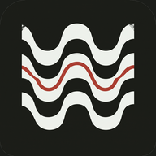

<!doctype html>
<html lang="pt-BR">
<head>
<meta charset="utf-8">
<meta name="viewport" content="width=device-width, initial-scale=1, viewport-fit=cover">
<title>Treino de portugues</title>
<meta name="description" content="Práctica de portugués brasileño. Proyecto personal de estudio, no oficial, hecho a partir de las clases en el Instituto Guimarães Rosa.">
<meta name="theme-color" content="#F6F5F1">
<link rel="manifest" href="manifest.webmanifest">
<link rel="icon" href="icons/icon-192.png" sizes="192x192" type="image/png">
<link rel="apple-touch-icon" href="icons/icon-180.png">
<meta name="apple-mobile-web-app-capable" content="yes">
<meta name="apple-mobile-web-app-status-bar-style" content="default">
<meta name="apple-mobile-web-app-title" content="Treino">
<meta name="mobile-web-app-capable" content="yes">
<style>
  /* =================== the palette ===================
     Every colour in the app is declared in this block and nowhere else. No
     rule further down names a colour, and the JavaScript names none at all.
     It sits up here in the <head> so the page has its background before
     anything else has loaded.

     Adding an assunto? Add one line to the .t- list and you are done. The
     tile, the swatch dot on its category card, the lesson row and the
     question card all read --hue off the element they are on, so there is no
     second list anywhere to keep in step. npm test fails if you miss one.

     Two copies live outside CSS because the platform gives us no choice: the
     theme-color meta above, and background_color/theme_color in
     manifest.webmanifest. A test holds all three to --ground. */
  :root{
    /* brighter than the old photocopy grey, still warm paper rather than white */
    --ground:#F6F5F1;
    --groundGlass:rgba(246,245,241,.95);  /* the sticky bars, under their blur */
    --card:#FFFFFF;
    --ink:#171A16;
    --onInk:#FBFBF9;                      /* type sitting on a dark button */
    --muted:#71756B;

    /* the ink, thinned: rules, tracks, washes, and the shadow under a button */
    --line:rgba(23,26,22,.13);
    --line2:rgba(23,26,22,.24);
    --wash:rgba(23,26,22,.05);            /* behind a block of code */
    --press:rgba(23,26,22,.07);           /* a flat button, held down */
    --track:rgba(23,26,22,.10);           /* the unfilled part of a progress bar */
    --sink:rgba(0,0,0,.42);               /* the 4px that makes a button pressable */
    --mutedSoft:rgba(113,117,107,.08);    /* a feedback box with no verdict */

    /* the pen colours, lifted. Amber is the highlighter: it carries the
       brightness without breaking the student-worksheet idea. */
    --green:#2E7D5B;  --greenSoft:#E7F4EC;
    --red:#C8453A;    --redSoft:#FCEBE9;
    --amber:#E3A22A;  --amberSoft:#FCF2DD;
    --blue:#2F5BA8;   --blueSoft:#EAF0FB;

    --serif: Georgia, "Times New Roman", serif;
    --sans: -apple-system, BlinkMacSystemFont, "Segoe UI", Roboto, sans-serif;
    --r:14px;         /* the app's corner radius */
    --pad:16px;
  }

  html{background:var(--ground)}
  body{margin:0;background:var(--ground)}

  /* ---------- one hue per assunto ----------
     Muted on purpose: fourteen saturated colours on one screen is a toy. These
     sit at roughly the same lightness so no single tile jumps out, and each is
     used three ways - a soft tint behind the tile, a firmer border, and the
     progress bar itself.

     Order matters: the fallback line has to come first, or it would win over
     the rules below it and paint everything grey. */
  .tile,.row,.qwrap,.cat{--hue:var(--muted)}
  .t-interrog   {--hue:#3D5A99}
  .t-gostar     {--hue:#B8433A}
  .t-estarcom   {--hue:#1F7A6B}
  .t-serestar   {--hue:#8A4372}
  .t-artigos    {--hue:#B58318}
  .t-prep       {--hue:#5B4A9E}
  .t-paises     {--hue:#6B7A2E}
  .t-fonetica   {--hue:#C06239}
  .t-antonimos  {--hue:#3F6675}
  .t-nosagente  {--hue:#45774A}
  .t-possessivos{--hue:#7D4E86}
  .t-expressoes {--hue:#2E7D8F}
  .t-alfabeto   {--hue:#8A6A1F}
  .t-numeros    {--hue:#9E3F66}

  /* The four fixed categories, each borrowing the hue of a topic it holds. A
     topic with no .t- line of its own inherits its category's colour here
     rather than going grey - the cascade gives us that fallback for free. */
  .c-verbos     {--hue:#B8433A}
  .c-palavras   {--hue:#3D5A99}
  .c-som        {--hue:#C06239}
  .c-vocab      {--hue:#6B7A2E}
  .c-outros     {--hue:var(--muted)}
</style>
</head>
<body>
<script src="js/progress.js"></script>
<script>
/* Chromium fires this before the app boots, and Brave suppresses its own
   install banner entirely - so catch it here or the one-tap install is gone. */
window.__installEvent = null;
window.addEventListener("beforeinstallprompt", function(e){
  e.preventDefault();
  window.__installEvent = e;
  window.dispatchEvent(new Event("portu-installable"));
});
window.addEventListener("appinstalled", function(){
  window.__installEvent = null;
  window.dispatchEvent(new Event("portu-installed"));
});
</script>
<div id="app"></div>

<style>
  /* the palette lives in the <head>, above - nothing down here names a colour */
  *{box-sizing:border-box;-webkit-tap-highlight-color:transparent}

  /* full bleed. The old bordered card read as a page inside something else. */
  #app{
    font-family:var(--sans);
    color:var(--ink);
    background:var(--ground);
    min-height:100vh;
    min-height:100dvh;
    line-height:1.45;
  }
  .wrap{max-width:560px;margin:0 auto;padding:0 var(--pad) 40px}

  /* ---------- the bar that stays put ---------- */
  .bar{
    position:sticky;top:0;z-index:20;
    background:var(--groundGlass);
    backdrop-filter:saturate(1.6) blur(10px);
    -webkit-backdrop-filter:saturate(1.6) blur(10px);
    border-bottom:1px solid var(--line);
  }
  .bar .in{
    max-width:560px;margin:0 auto;
    padding:10px var(--pad);
    display:flex;align-items:center;gap:12px;
    min-height:54px;
  }
  .brand{display:flex;align-items:center;gap:9px;flex:1;min-width:0}
  .brand img{width:26px;height:26px;border-radius:7px;flex:none;display:block}
  .brand span{
    font-family:var(--serif);font-size:17px;letter-spacing:-.01em;
    white-space:nowrap;overflow:hidden;text-overflow:ellipsis;
  }
  .chip{
    flex:none;font-size:13px;color:var(--muted);
    font-variant-numeric:tabular-nums;
  }

  /* round bar: leave, progress, counter */
  .x{
    flex:none;width:34px;height:34px;
    border:none;background:transparent;color:var(--muted);
    font-size:22px;line-height:1;border-radius:9px;
    display:flex;align-items:center;justify-content:center;
  }
  .x:active{background:var(--press)}
  .prog{
    flex:1;height:9px;border-radius:999px;
    background:var(--track);
    overflow:hidden;
  }
  .prog span{
    display:block;height:100%;border-radius:999px;
    background:var(--amber);
    transition:width .35s cubic-bezier(.2,.8,.2,1);
  }
  .count{
    flex:none;font-size:13px;color:var(--muted);
    font-variant-numeric:tabular-nums;min-width:38px;text-align:right;
  }

  /* ---------- surfaces ---------- */
  .card{
    background:var(--card);
    border:1px solid var(--line);
    border-radius:var(--r);
    padding:18px var(--pad);
    margin-top:14px;
  }
  .card.flush{padding:0;overflow:hidden}

  h1{
    font-family:var(--serif);
    font-size:25px;line-height:1.15;margin:0 0 5px;
    font-weight:400;letter-spacing:-.015em;
  }
  h2.sec{
    font-family:var(--serif);
    font-size:15px;font-weight:400;color:var(--muted);
    margin:28px 0 10px;
    display:flex;justify-content:space-between;align-items:baseline;gap:10px;
  }
  h2.sec .n{font-family:var(--sans);font-size:12.5px;font-variant-numeric:tabular-nums}
  .sub{color:var(--muted);font-size:13.5px;margin:0 0 14px}

  /* ---------- the hero, first thing you can touch ---------- */
  .hero{padding:26px 0 4px}
  .hero h1{font-size:28px;margin:0 0 6px}
  .hero .meta{font-size:13.5px;color:var(--muted);margin:0 0 20px}
  .hero .meta b{font-weight:600;color:var(--ink)}

  /* ---------- buttons you can feel ---------- */
  button{font-family:inherit;font-size:15px;cursor:pointer}
  .cta{
    width:100%;
    padding:15px 16px;
    background:var(--ink);
    color:var(--onInk);
    border:none;
    border-bottom:4px solid var(--sink);
    border-radius:12px;
    font-size:16px;font-weight:600;letter-spacing:.01em;
    transition:transform .06s, border-width .06s, filter .12s;
  }
  .cta:active{transform:translateY(2px);border-bottom-width:2px}
  .cta.ghost{
    background:var(--card);color:var(--ink);
    border:1.5px solid var(--line2);border-bottom-width:4px;
    font-weight:500;
  }
  .cta + .cta{margin-top:10px}
  .mark + .cta, .tail + .cta{margin-top:16px}

  .opt{
    display:block;width:100%;text-align:left;
    background:var(--card);
    border:1.5px solid var(--line2);
    border-bottom-width:4px;
    border-radius:12px;
    padding:15px 16px;
    min-height:54px;
    font-family:var(--serif);
    font-size:19px;
    color:var(--ink);
    transition:transform .06s, border-width .06s, border-color .12s, background .12s;
  }
  .opt:active:not([disabled]){transform:translateY(2px);border-bottom-width:2px}
  .opt:focus-visible{outline:3px solid var(--blue);outline-offset:2px}
  .opt.right{border-color:var(--green);background:var(--greenSoft)}
  .opt.wrong{border-color:var(--red);background:var(--redSoft);color:var(--red)}
  .opt[disabled]{cursor:default}
  .opt[disabled]:not(.right):not(.wrong){opacity:.5}
  .choices{display:flex;flex-direction:column;gap:10px}

  /* ---------- the question ---------- */
  .qwrap{
    background:var(--card);
    border:1px solid var(--line);
    border-radius:var(--r);
    padding:20px var(--pad) 22px;
    margin-top:16px;
  }
  .qwrap .topic{
    font-size:11.5px;font-weight:600;letter-spacing:.05em;
    color:var(--hue);margin:0 0 9px;
  }
  .q{
    font-family:var(--serif);
    font-size:23px;line-height:1.5;margin:0 0 7px;
  }
  .blank{
    display:inline-block;min-width:62px;
    border-bottom:2px solid var(--amber);
    vertical-align:baseline;
  }
  .gloss{color:var(--muted);font-size:14px;font-style:italic;margin:0}

  input.write{
    width:100%;
    font-family:var(--serif);font-size:20px;
    padding:14px 15px;
    border:1.5px solid var(--line2);border-radius:12px;
    background:var(--card);color:var(--ink);
  }
  input.write:focus{outline:none;border-color:var(--blue);box-shadow:0 0 0 3px var(--blueSoft)}

  /* ---------- feedback ---------- */
  .mark{
    font-family:var(--serif);font-size:15.5px;line-height:1.5;
    margin:14px 0 0;padding:14px 15px;
    border-radius:12px;
    background:var(--mutedSoft);
  }
  .mark.hint{background:var(--blueSoft)}
  .mark.ok{background:var(--greenSoft)}
  .mark.no{background:var(--redSoft)}
  .mark b{font-weight:400;border-bottom:1.5px solid currentColor}
  .mark .lead{
    display:block;font-family:var(--sans);
    font-size:11.5px;font-weight:700;letter-spacing:.07em;text-transform:uppercase;
    color:var(--muted);margin-bottom:5px;
  }
  .mark.ok .lead{color:var(--green)}
  .mark.no .lead{color:var(--red)}
  .mark.hint .lead{color:var(--blue)}

  /* ---------- topics as a grid, not a wall of rows ---------- */
  .grid{display:grid;grid-template-columns:1fr 1fr;gap:9px}
  .tile{
    background:var(--card);
    border:1px solid var(--line);
    border-radius:12px;
    padding:12px 12px 11px;
    text-align:left;
    display:flex;flex-direction:column;gap:7px;
    min-height:76px;
    color:var(--ink);
    transition:transform .06s;
  }
  .tile:active{transform:translateY(1px)}
  .tile .nm{font-size:13.5px;line-height:1.3;flex:1;font-weight:500}
  .tile .bot{display:flex;align-items:center;gap:7px}
  .tile .bar{flex:1;height:5px;border-radius:999px;background:var(--track);overflow:hidden}
  .tile .bar span{display:block;height:100%;border-radius:999px;background:var(--hue)}
  .tile .nm{color:var(--ink)}
  .tile .key{
    display:block;width:9px;height:9px;border-radius:3px;
    background:var(--hue);margin-bottom:2px;
  }
  .tile{position:relative}
  .tile .pin{
    position:absolute;top:10px;right:10px;
    width:7px;height:7px;border-radius:50%;background:var(--red);
  }
  .tile .pct{font-size:11px;color:var(--muted);font-variant-numeric:tabular-nums}

  /* ---------- lessons ---------- */
  .rows{display:flex;flex-direction:column}
  .row{
    display:flex;align-items:center;gap:11px;
    width:100%;text-align:left;
    background:var(--card);border:none;
    border-bottom:1px solid var(--line);
    padding:14px var(--pad);
    color:var(--ink);font-size:15px;
  }
  .row:last-child{border-bottom:none}
  .row:active{background:var(--blueSoft)}
  .row .nm{flex:1}
  .row .go{color:var(--muted);font-size:17px;flex:none}
  .row .dot{
    flex:none;width:6px;height:6px;border-radius:50%;
    background:var(--red);
  }
  .row .key{
    flex:none;width:9px;height:9px;border-radius:3px;
    background:var(--hue);
  }
  .row .tag{
    flex:none;font-size:12.5px;color:var(--muted);
    font-variant-numeric:tabular-nums;
  }

  /* ---------- round summary ---------- */
  .score{
    font-family:var(--serif);font-size:58px;line-height:1;
    margin:4px 0 2px;letter-spacing:-.02em;
  }
  .score em{font-style:normal;color:var(--muted);font-size:28px}
  .misses{margin:16px 0 0;padding:0;list-style:none}
  .misses li{
    font-family:var(--serif);font-size:16px;
    padding:11px 0;border-top:1px solid var(--line);
  }
  .misses s{color:var(--red);text-decoration-color:var(--red)}
  .misses b{font-weight:400;color:var(--green)}
  .ok2{
    font-family:var(--sans);font-size:11px;font-weight:600;
    color:var(--green);background:var(--greenSoft);
    border-radius:999px;padding:2px 8px;
  }

  /* ---------- lesson screen ---------- */
  .hook{font-family:var(--serif);font-size:19px;line-height:1.5;margin:2px 0 14px}
  .pairs{width:100%;border-collapse:collapse;margin:4px 0}
  .pairs td{padding:10px 0;border-bottom:1px solid var(--line);vertical-align:top;font-size:15.5px}
  .pairs .es{width:44%;padding-right:12px;color:var(--muted);font-style:italic}
  .pairs .pt{font-family:var(--serif);font-size:17px}

  /* ---------- odds and ends ---------- */
  .tail{font-size:12.5px;color:var(--muted);margin:10px 0 0}
  .foot{
    margin-top:22px;font-size:12.5px;
    display:flex;justify-content:center;gap:18px;flex-wrap:wrap;
  }
  .link{background:none;border:none;color:var(--muted);font-size:12.5px;padding:6px 0;text-decoration:underline}
  input.file{display:block;width:100%;font-family:var(--sans);font-size:13px;color:var(--muted);padding:10px 0 2px}
  textarea.pack{
    width:100%;font-family:ui-monospace,Menlo,Consolas,monospace;
    font-size:12.5px;line-height:1.5;padding:12px;
    border:1.5px solid var(--line2);border-radius:12px;
    background:var(--card);color:var(--ink);resize:vertical;
  }
  textarea.pack:focus{outline:none;border-color:var(--blue)}
  .shape{
    font-family:ui-monospace,Menlo,Consolas,monospace;
    font-size:11.5px;line-height:1.55;white-space:pre;overflow-x:auto;
    background:var(--wash);border-radius:10px;
    padding:12px;margin:10px 0 0;
  }
  .inst{
    margin-top:16px;padding:16px var(--pad);
    border:1.5px dashed var(--line2);border-radius:var(--r);
    background:var(--card);
  }
  .inst h2{font-family:var(--serif);font-size:17px;font-weight:400;margin:0 0 4px}
  .inst p{color:var(--muted);font-size:13px;margin:0 0 12px}
  .inst ol{margin:0;padding-left:19px;font-size:13.5px;line-height:1.65}
  .inst li{margin-bottom:4px}
  .inst .note{font-size:12px;font-style:italic;margin:10px 0 0}
  .inst .no{display:block;margin:12px 0 0;text-align:right}

  /* ---------- the tab bar ---------- */
  .tabs{
    position:fixed;left:0;right:0;bottom:0;z-index:30;
    background:var(--groundGlass);
    backdrop-filter:saturate(1.6) blur(12px);
    -webkit-backdrop-filter:saturate(1.6) blur(12px);
    border-top:1px solid var(--line);
    padding-bottom:env(safe-area-inset-bottom);
  }
  .tabs .in{max-width:560px;margin:0 auto;display:flex}
  .tabs button{
    flex:1;background:none;border:none;
    padding:9px 4px 9px;
    display:flex;flex-direction:column;align-items:center;gap:3px;
    color:var(--muted);font-size:11px;letter-spacing:.01em;
    transition:color .12s;
  }
  .tabs button.on{color:var(--ink);font-weight:600}
  .tabs svg{width:22px;height:22px;stroke:currentColor;fill:none;
    stroke-width:1.7;stroke-linecap:round;stroke-linejoin:round}
  .tabs .badge{
    position:absolute;transform:translate(13px,-4px);
    min-width:16px;height:16px;border-radius:999px;
    background:var(--red);color:var(--card);
    font-size:10px;font-weight:700;line-height:16px;text-align:center;
    padding:0 4px;
  }
  /* room for the bar, so the last row is never hidden behind it */
  .wrap{padding-bottom:86px}

  /* ---------- category cards ---------- */
  .cat{
    display:flex;align-items:center;gap:13px;
    width:100%;text-align:left;
    background:var(--card);
    border:1px solid var(--line);
    border-bottom-width:3px;
    border-radius:12px;
    padding:15px var(--pad);
    margin-bottom:9px;
    color:var(--ink);
    transition:transform .06s, border-width .06s;
  }
  .cat:active{transform:translateY(1px);border-bottom-width:2px}
  .cat .swatch{
    flex:none;display:grid;grid-template-columns:1fr 1fr;gap:2px;
    width:22px;height:22px;
  }
  .cat .swatch i{display:block;border-radius:2px;background:var(--hue)}
  .cat .swatch i.empty{background:transparent}
  .cat .txt{flex:1;min-width:0}
  .cat .nm{font-size:16px;font-weight:600;display:block}
  .cat .meta{font-size:12.5px;color:var(--muted)}
  .cat .go{color:var(--muted);font-size:18px;flex:none}

  /* ---------- motion: what makes it feel like an app ---------- */
  @media (prefers-reduced-motion:no-preference){
    .screen{animation:slide .26s cubic-bezier(.2,.8,.2,1)}
    .stamp{animation:pop .22s cubic-bezier(.2,1.4,.4,1)}
    .shake{animation:shake .32s}
  }
  @keyframes slide{from{opacity:0;transform:translateY(9px)}to{opacity:1;transform:none}}
  @keyframes pop{from{opacity:0;transform:scale(.96)}to{opacity:1;transform:none}}
  @keyframes shake{
    10%,90%{transform:translateX(-2px)}
    30%,70%{transform:translateX(4px)}
    50%{transform:translateX(-4px)}
  }
  @keyframes pulse{50%{filter:brightness(1.22)}}
</style>

<script>
(function(){
"use strict";

/* ---------------- item bank ---------------- */
/* t=topic k=kind(mc|w) q=sentence g=Spanish gloss c=choices a=answer
   alt=accepted variants h=Socratic hint e=explanation w=weak-tags        */

var TOPICS = [
  {id:"interrog", name:"Pronomes interrogativos"},
  {id:"gostar",   name:"Verbo gostar"},
  {id:"estarcom", name:"Estar com"},
  {id:"serestar", name:"Ser e estar"},
  {id:"artigos",  name:"Artigos, contrações, crase"},
  {id:"prep",     name:"Preposições"},
  {id:"paises",   name:"Gênero dos países"},
  {id:"fonetica", name:"Sistema consonântico"},
  {id:"antonimos",name:"Antônimos"},
  {id:"nosagente", name:"Nós e a gente"},
  {id:"possessivos", name:"Pronomes possessivos"},
  {id:"expressoes", name:"Expressões de sala de aula"},
  {id:"alfabeto", name:"O alfabeto"},
  {id:"numeros", name:"Os números"}
];

/* The slips seen in the notebook, plus escala — which is not a slip but the
   six items about how far up the scale you are, so the lesson that teaches
   them can claim exactly those and drill nothing else. */
var WEAK = ["p1sg","onde-aonde","que-oque","de-inf","contr","porque","posse","escala"];

/* short remedial lessons. pick = which items drill it afterwards */
var LESSONS = [
{
  id:"p1sg", name:"Eu gosto, nunca eu gosta", pick:{tag:"p1sg"},
  hook:"El gustar del español nunca cambia según quién habla: me gusta, te gusta, le gusta, siempre gusta. Al pasar al portugués, ¿qué es lo único que ahora sí tiene que moverse?",
  pairs:[["Me gusta el café.","Eu gosto do café."],
         ["Me gustan los coches.","Eu gosto dos carros."],
         ["Estoy de vacaciones.","Eu estou de férias."]],
  rule:"Tú eres el sujeto, así que el verbo lleva la terminación de eu: gosto, estou, sou, tenho. El español esconde al hablante dentro de ese me; el portugués te pone delante y conjuga a tu alrededor.",
  trap:"En el cuaderno: “Eu gosta dos carros japoneses”, “Eu não gostam da Letícia”, “Porque está de férias”. El mismo desliz tres veces."
},
{
  id:"gostar-de", name:"Gostar precisa de", pick:{tags:["de-inf","contr"],topic:"gostar"},
  hook:"Gostar nunca puede tocar directamente aquello que te gusta. Mira estos tres ejemplos y pregúntate qué hay siempre entre el verbo y lo que viene después.",
  pairs:[["Me gusta viajar.","Eu gosto de viajar."],
         ["Le gusta hacer pastel.","Ela gosta de fazer bolo."],
         ["Nos gusta la música pop.","Nós gostamos da música pop."]],
  rule:"Siempre gostar + de. Delante de un infinitivo va suelto: de viajar. Delante de un sustantivo se funde con el artículo: de + o = do, de + a = da, de + os = dos, de + as = das. Delante de un pronombre: dele, dela, deles, delas.",
  trap:"Olvidar el de delante de un infinitivo, y equivocarse de género en la contracción, son dos errores distintos. Revísalos por separado: primero, ¿hay un de? Después, ¿qué artículo lleva el sustantivo?"
},
{
  id:"escala", name:"Quanto você gosta", pick:{topic:"gostar",tag:"escala"},
  hook:"El español gradúa esto con un poco, mucho y demasiado. Mira las tres parejas: una de ellas traduce con una palabra que en español sería una queja. ¿Cuál es, y qué quiere decir de verdad en portugués?",
  pairs:[["Me gusta un poco.","Gosto um pouco."],
         ["Me gusta muchísimo.","Gosto demais."],
         ["Me encanta el pan de queso.","Adoro pão de queijo."]],
  rule:"De menos a más: não gosto, gosto um pouco, gosto, gosto muito, gosto demais, adoro, amo. Hacia abajo la escala sigue con não gosto nada, detesto y odeio. Para me encanta, el brasileño dice adoro; amo vale también para cosas, no solo para personas.",
  trap:"Demais no es demasiado. En español demasiado avisa de que algo se pasó de la raya; gosto demais es un elogio, un escalón por encima de gosto muito. Y el de de gostar no se contagia: adorar, amar, detestar y odiar van directos a la cosa — adoro pão de queijo, nunca adoro de pão de queijo."
},
{
  id:"onde-aonde", name:"Onde ou aonde", pick:{tag:"onde-aonde"},
  hook:"Aonde no es un onde más elegante. Parte la palabra en dos: a + onde. ¿Qué suele hacer esa a pequeña delante de un lugar?",
  pairs:[["¿Dónde viven?","Onde eles moram?"],
         ["¿Adónde van?","Aonde vocês vão?"],
         ["¿De dónde eres?","De onde você é?"]],
  rule:"Onde pregunta em que lugar: quedarse. Va con morar, ficar, estar, trabalhar. Aonde lleva la a de movimiento hacia, así que va con ir, chegar, viajar, levar.",
  trap:"Fíjate en lo que hace el verbo, no en cómo te suena la frase. Morar nunca se mueve, así que siempre es onde."
},
{
  id:"que-oque", name:"Que, o que, qual, quem", pick:{tag:"que-oque"},
  hook:"Tres de las cuatro sirven para preguntar por cosas. Lo que decide entre ellas no es el significado, sino qué palabra viene justo después del espacio. Mira eso primero.",
  pairs:[["¿Qué día llega?","Que dia ela vai chegar?"],
         ["¿Qué pasó?","O que aconteceu?"],
         ["¿Cuál prefieres, el azul o el verde?","Qual você prefere, o azul ou o verde?"]],
  rule:"Que se pega directamente a un sustantivo: que dia, que horas, que língua. Si no sigue un sustantivo — sino un pronombre, un verbo, o nada — necesitas o que, donde esa o es una partícula de énfasis sin significado propio. Qual/quais elige dentro de un grupo ya nombrado. Quem es solo para personas.",
  trap:"En el cuaderno se usó quem dos veces cuando la respuesta era una cosa. Si la respuesta no es una persona, quem ya queda descartada."
},
{
  id:"porque", name:"Os quatro porquês", pick:{tag:"porque"},
  hook:"Cuatro formas de escribirlo, y solo dos preguntas deciden cuál toca: ¿esto es la pregunta o la respuesta?, y ¿dónde cae la palabra dentro de la frase?",
  pairs:[["¿Por qué no fuiste?","Por que você não foi?"],
         ["Porque estoy con gripe.","Porque estou com gripe."],
         ["No fuiste, ¿por qué?","Você não foi, por quê?"],
         ["Nadie sabe el porqué.","Ninguém sabe o porquê."]],
  rule:"Por que — pregunta, dos palabras, al inicio o en medio. Porque — respuesta, una sola palabra. Por quê — pregunta, pero justo al final, por eso lleva circunflejo. Porquê — sustantivo, con artículo delante: o porquê, os porquês.",
  trap:"Un artículo delante delata al sustantivo. Un punto justo después delata al circunflejo."
},
{
  id:"contr", name:"Preposição + artigo", pick:{tag:"contr"},
  hook:"El portugués funde mucho más que el español. El español solo tiene al y del. ¿Cuántas de estas fusiones puedes adivinar antes de mirar?",
  pairs:[["en el / en la","no / na  (em + o, em + a)"],
         ["del / de la","do / da  (de + o, de + a)"],
         ["a las dos","às duas horas  (a + as)"]],
  rule:"em → no, na, nos, nas. de → do, da, dos, das. a → ao, aos, y à, às con acento grave, que es la crase. por → pelo, pela, pelos, pelas. para → pro, pra, pros, pras, solo al hablar.",
  trap:"La fusión sale sola en cuanto sabes el género del sustantivo, así que el trabajo de verdad es el género. Música es femenino, así que da música, no do."
},
{
  id:"estarcom", name:"Tener → estar com", pick:{topic:"estarcom"},
  hook:"El español usa tener para el hambre, la sed, el frío, el miedo. El portugués casi nunca usa ter para eso. ¿Qué lo sustituye?",
  pairs:[["Tengo hambre.","Estou com fome."],
         ["Tiene prisa.","Ela está com pressa."],
         ["Tengo dolor de cabeza.","Estou com dor de cabeça."]],
  rule:"estar + com + sustantivo, para todo lo que sientes ahora mismo: fome, sede, frio, calor, sono, pressa, medo, raiva, saudade, febre, gripe, dor de...",
  trap:"Tres grupos rompen el patrón. Los adjetivos van con estar a secas: estou cansado, apaixonado, grávida. Unos pocos van con estar de: de férias, de folga, de ressaca. Las fobias mantienen ter: tenho fobia dos sapos."
},
{
  id:"serestar", name:"Ser e estar", pick:{topic:"serestar"},
  hook:"Esta distinción ya la tienes en español, así que solo vale la pena fijarse en los casos que no coinciden. Dos de estos tres van al revés que en español.",
  pairs:[["Ipanema está en Río.","Ipanema é no Rio de Janeiro."],
         ["Mi abuelo está muerto.","Meu avô está morto."],
         ["Estoy casado.","Eu sou casado."]],
  rule:"Ser se queda con lo que no cambia: origen, profesión, material, estado civil, días, hora y ubicación permanente. Estar se queda con lo que sí cambia: ánimo, salud, postura, ropa, ubicación pasajera.",
  trap:"La ubicación permanente es la que atrapa a los hispanohablantes: una ciudad o una playa é en algún sitio. Morto va con estar porque la muerte es un cambio, no un rasgo."
},
{
  id:"paises", name:"Países: da, do ou de", pick:{topic:"paises"},
  hook:"Antes de aprenderte una lista, escucha la última sílaba del nombre del país. ¿Qué comparten Nicarágua, França, China y Colômbia que no tienen Brasil, Japão ni Peru?",
  pairs:[["Soy de Nicaragua.","Sou da Nicarágua."],
         ["Vivo en Brasil.","Moro no Brasil."],
         ["Soy de Portugal.","Sou de Portugal."]],
  rule:"Los nombres de país terminados en a átona son femeninos: a Nicarágua, a França. Todo lo demás es masculino: o Brasil, o Japão. La regla es de sonido, así que una a final tónica no cuenta: o Panamá, o Canadá.",
  trap:"Dos excepciones terminan en a y aun así son masculinas: o Quênia, o Camboja. Y hay otro grupo que no lleva artículo ninguno: Portugal, Israel, Cuba, Honduras, Angola, y todas las ciudades salvo o Rio, o Recife, o Cairo, o Porto, o Havre."
},
{
  id:"prep", name:"Preposições fixas", pick:{topic:"prep"},
  hook:"Algunos verbos y expresiones vienen soldados a una preposición, y no siempre es la del español. ¿Cuál de estas habrías traducido literalmente?",
  pairs:[["Voy en avión.","Vou de avião."],
         ["Murió de cáncer.","Morreu de câncer."],
         ["Cuida de los niños.","Cuida das crianças."]],
  rule:"El transporte lleva de: de ônibus, de carro, de avião, pero a pé. Morrer de, cuidar de, gostar de, precisar de. Até marca un límite donde te detienes, en el espacio o en el tiempo.",
  trap:"À tarde y de tarde no son intercambiables. Ontem à tarde nombra un día; de tarde describe una costumbre, sin día concreto."
},
{
  id:"fonetica", name:"O que muda no som", pick:{topic:"fonetica"},
  hook:"Leer portugués con sonidos del español es justo lo que deja el acento pegado. Cinco cambios hacen casi todo el trabajo: prueba primero a leer dia, tomate, Brasil, sal y carro en voz alta.",
  pairs:[["la d antes de i, o de una e final, se vuelve dj","dia, verdade"],
         ["la t en los mismos casos se vuelve tch","tomate, tio"],
         ["la s entre vocales se vuelve z","Brasil, música"]],
  rule:"Además: la l al final de sílaba se vuelve u (sal, azul); la r inicial y la rr suenan como la j española (rádio, carro), mientras que una r simple entre vocales es la r normal del español (cara); la m y la n finales nasalizan la vocal que llevan delante.",
  trap:"La b y la v nunca se confunden, al contrario que en español. Y la x tiene cuatro valores: peixe (ch), táxi (cs), máximo (s), exame (z)."
},
{
  id:"nosagente", name:"Nós, a gente, agente", pick:{topic:"nosagente"},
  hook:"Tres formas que suenan casi igual y significan cosas muy distintas: a gente, agente y há gente. Mira estas tres frases y pregúntate cuál de ellas habla de nosotros.",
  pairs:[["Nosotros vamos a la playa.","Nós vamos à praia. / A gente vai à praia."],
         ["El agente no completó su misión.","O agente não completou sua missão."],
         ["Hay demasiada gente en esta fiesta.","Há gente demais nesta festa."]],
  rule:"A gente quiere decir nós, pero lleva el verbo en la forma de ele/ela: a gente vai, a gente gosta. Es solo para hablar informal. Nós lleva la primera persona del plural — nós vamos, nós gostamos — y vale igual en formal y en informal. Agente, todo junto, es un sustantivo: quien ejerce una función, como agente de saúde, de viagem o de polícia. Y há gente es el verbo haver: hay gente.",
  trap:"El resbalón fácil es conjugar a gente como si fuera nós: «a gente vamos». Lleva siempre la forma de ele/ela, aunque signifique nosotros. El otro es escribir a gente separado donde hacía falta el sustantivo agente, o el verbo há."
},
{
  id:"posse", name:"O possessivo segue a coisa", pick:{tag:"posse"},
  hook:"En español, sus cosas, sus problemas y sus actividades llevan todas la misma palabra. En portugués las tres son distintas. Entonces, ¿con qué concuerda el posesivo: con quien posee, o con lo poseído?",
  pairs:[["tus cosas","suas coisas"],
         ["tus problemas","seus problemas"],
         ["nuestras actividades","nossas atividades"]],
  rule:"El posesivo concuerda en género y número con la cosa poseída, nunca con el dueño: meu livro, minha casa, meus livros, minhas coisas. Lo mismo con seu, sua, seus, suas y con nosso, nossa, nossos, nossas. Para la tercera persona el brasileño prefiere dele, dela, deles y delas, porque seu y sua sirven para demasiadas personas a la vez y dejan la frase ambigua.",
  trap:"No caderno: «seus coisas», «nossos atividades», «minha costas». Las tres veces el posesivo siguió al dueño en lugar de a la cosa — que es justo lo que hace el español. Y dos trampas sueltas: problemas es masculino aunque acabe en -as, y costas va en plural en portugués aunque la espalda sea singular en español."
},
{
  id:"expressoes", name:"O que dizer na aula", pick:{topic:"expressoes"},
  hook:"Tres de estas expresiones significan casi lo contrario a lo que estamos acostumbrados en Latinoamérica.",
  pairs:[["Claro, dígame.","Pois não!"],
         ["Con permiso (para pasar).","Com licença."],
         ["Perdón (por algo que hice).","Desculpe."]],
  rule:"Pois não no es una negación: es un sí, el «claro, dígame» de un mesero o un recepcionista. Com licença pide paso o permiso; Desculpe pide disculpas por algo ya hecho — el español usa perdón para las dos. Y obrigado concuerda con quien habla: un hombre dice obrigado, una mujer obrigada, sin importar a quién le agradece.",
  trap:"Los días de la semana se cuentan desde el domingo, así que el lunes es segunda-feira y el viernes sexta-feira — están todos corridos un número respecto a lo que esperarías. Solo domingo y sábado tienen nombre propio."
},
{
  id:"alfabeto", name:"Como se soletra", pick:{topic:"alfabeto"},
  hook:"Cinco letras se llaman de forma muy distinta que en español, y son justo las que vas a necesitar para deletrear tu nombre o un correo. Mira estas tres y adivina las otras dos.",
  pairs:[["hache","agá (H)"],
         ["i griega","ípsilon (Y)"],
         ["equis","xis (X)"]],
  rule:"Son 26 letras. Las que más se apartan del español: H es agá, W es dáblio, Y es ípsilon, X es xis y K es cá. El resto sigue el patrón bê, cê, dê, ê, éfe, gê... El verbo para deletrear es soletrar.",
  trap:"El ç no entra en el alfabeto: es un símbolo, no una letra, y suena como la s del español. Lo mismo el til (~), que nasaliza la vocal en vez de marcar dónde cae la fuerza."
},
/* Os números is the one assunto that needs more than one aula: you cannot
   learn to count from three example pairs. Four parts, in order — the first
   opens inside the assunto, the rest hang under Continuação. */
{
  id:"numeros", name:"Do zero ao dez", pick:{topic:"numeros"},
  hook:"Siete, nueve, diez, ocho: en español los cuatro llevan un diptongo. Mira cómo quedan en portugués y fíjate en qué le pasa a ese diptongo cada vez.",
  pairs:[["0","zero"],
         ["1","um / uma"],
         ["2","dois / duas"],
         ["3","três"],
         ["4","quatro"],
         ["5","cinco"],
         ["6","seis"],
         ["7","sete"],
         ["8","oito"],
         ["9","nove"],
         ["10","dez"]],
  rule:"El diptongo del español se deshace: siete es sete, nueve es nove, diez es dez. Y el ch de ocho se vuelve it: oito. Los demás ya te los sabes. Solo el 1 y el 2 cambian de género — um/uma, dois/duas — y concuerdan con lo que cuentan: uma casa, duas casas. Del 3 en adelante el número ya no se mueve nunca.",
  trap:"Três lleva acento circunflejo, no agudo. Y al dictar un teléfono en Brasil el 6 casi nunca se dice seis: se dice meia, de meia dúzia, para que no se confunda con três al oírlo."
},
{
  id:"numeros-dezenas", name:"Do onze ao cem", pick:{topic:"numeros"},
  hook:"Del 11 al 15 hay que aprendérselos de memoria, pero del 16 al 19 no: los cuatro se arman solos con una misma receta. Mira dezesseis, dezessete, dezoito y dezenove, y descubre cuál es.",
  pairs:[["11","onze"],
         ["12","doze"],
         ["13","treze"],
         ["14","catorze"],
         ["15","quinze"],
         ["16","dezesseis"],
         ["17","dezessete"],
         ["18","dezoito"],
         ["19","dezenove"],
         ["20","vinte"],
         ["21","vinte e um / vinte e uma"],
         ["30","trinta"],
         ["40","quarenta"],
         ["50","cinquenta"],
         ["60","sessenta"],
         ["70","setenta"],
         ["80","oitenta"],
         ["90","noventa"],
         ["100","cem"]],
  rule:"Del 11 al 15 son propios: onze, doze, treze, catorze, quinze. Del 16 al 19 se arman con dez más la unidad, pegado todo: dezesseis, dezessete, dezoito, dezenove. Las decenas van vinte, trinta, quarenta, cinquenta, sessenta, setenta, oitenta, noventa. Y de 21 en adelante se junta la decena, una e y la unidad: vinte e um, trinta e dois, noventa e nove.",
  trap:"Quarenta se escribe con qu, no con cu como en español, y cinquenta igual. Sessenta va con doble s. Ojo también con dezesseis: así es en Brasil; dezasseis es de Portugal y no es la forma del curso."
},
{
  id:"numeros-centenas", name:"Cem, mil e o e", pick:{topic:"numeros"},
  hook:"En español dices ciento veintitrés de corrido, sin nada en medio. El portugués mete algo entre cada parte del número, y lo mete siempre. Mira el 101 y el 123 y verás qué es.",
  pairs:[["100","cem"],
         ["101","cento e um"],
         ["123","cento e vinte e três"],
         ["200","duzentos / duzentas"],
         ["300","trezentos / trezentas"],
         ["500","quinhentos / quinhentas"],
         ["900","novecentos / novecentas"],
         ["1000","mil"]],
  rule:"Cem va solo; en cuanto lo acompaña algo se vuelve cento: cento e um, cento e vinte e três. Esa e entre las partes es obligatoria. Las centenas concuerdan en género igual que dois y duas: duzentos reais, pero duzentas pessoas. Mil no lleva nada delante — se dice mil, nunca um mil. Más arriba sí vuelve: um milhão.",
  trap:"Quinhentos para 500 no se parece a nada del español, y es el que más se escapa. Duzentos tampoco sale de dos: no es doscentos. Y el desliz de siempre es comerse la e, cento vinte e três en lugar de cento e vinte e três."
},
{
  id:"numeros-ordinais", name:"Primeiro, segundo, terceiro", pick:{topic:"numeros"},
  hook:"Segunda-feira, terça-feira, quarta-feira: los días de la semana en portugués son ordinales disfrazados. Mira la lista y busca el único que no encaja con el día que le tocaría.",
  pairs:[["1º","primeiro / primeira"],
         ["2º","segundo / segunda"],
         ["3º","terceiro / terceira"],
         ["4º","quarto / quarta"],
         ["5º","quinto / quinta"],
         ["6º","sexto / sexta"],
         ["7º","sétimo / sétima"],
         ["8º","oitavo / oitava"],
         ["9º","nono / nona"],
         ["10º","décimo / décima"]],
  rule:"Los ordinales concuerdan en género y número, como cualquier adjetivo: o primeiro andar, a primeira vez, as primeiras aulas. Se usan para pisos, puestos y siglos. Del 11 en adelante casi nadie los dice al hablar: se dice página quinze, no décima quinta página.",
  trap:"El 9º es nono, no noveno. Y el martes es terça-feira, con terça, aunque el ordinal sea terceiro: es la única de la serie que cambia de forma. La semana empieza en domingo, así que segunda-feira es el lunes."
}
];
function lessonById(id){
  for(var i=0;i<LESS.length;i++) if(LESS[i].id===id) return LESS[i];
  return null;
}

var B = [
{id:"interrog-0",t:"interrog",k:"mc",q:"___ horas são?",g:"¿Qué hora es?",c:["Que","O que","Qual","Quem"],a:"Que",h:"¿Qué tipo de palabra viene justo después del espacio: un sustantivo o un pronombre?",e:"Delante de un sustantivo va que. O que va delante de un pronombre, o solo.",w:["que-oque"]},
{id:"interrog-1",t:"interrog",k:"mc",q:"___ você prefere, o azul ou o verde?",g:"¿Cuál prefieres, el azul o el verde?",c:["Qual","Que","O que","Quem"],a:"Qual",h:"¿Estás preguntando de forma abierta, o eligiendo entre dos cosas que ya se nombraron?",e:"Qual/quais = elegir dentro de un grupo que ya se mencionó.",w:[]},
{id:"interrog-2",t:"interrog",k:"mc",q:"___ eles moram?",g:"¿Dónde viven?",c:["Onde","Aonde","Cadê","De onde"],a:"Onde",h:"¿Morar describe ir a un lugar, o quedarse en uno?",e:"Morar es permanencia, así que onde. Aonde lleva dentro la a de movimiento hacia.",w:["onde-aonde"]},
{id:"interrog-3",t:"interrog",k:"mc",q:"___ vocês vão depois da aula?",g:"¿Adónde van después de clase?",c:["Aonde","Onde","Cadê","Quando"],a:"Aonde",h:"Ir pide un destino. ¿Cuál de las dos formas ya lleva esa a dentro?",e:"Aonde = a + onde, con verbos de movimiento.",w:["onde-aonde"]},
{id:"interrog-4",t:"interrog",k:"mc",q:"___ aconteceu aqui?",g:"¿Qué pasó aquí?",c:["O que","Que","Qual","Quem"],a:"O que",h:"¿Hay algún sustantivo después del espacio al que que se pueda pegar?",e:"No sigue ningún sustantivo, así que que no tiene a qué pegarse. La o es una partícula de énfasis, sin significado propio.",w:["que-oque"]},
{id:"interrog-5",t:"interrog",k:"mc",q:"___ dia ela vai chegar?",g:"¿Qué día llega?",c:["Que","Quem","O que","Aonde"],a:"Que",h:"Dia es un sustantivo. ¿Qué forma va pegada directamente a los sustantivos?",e:"Que + sustantivo. Quem solo pregunta por personas.",w:["que-oque"]},
{id:"interrog-6",t:"interrog",k:"mc",q:"___ eles preferem jogar, futebol ou futevôlei?",g:"¿Qué prefieren jugar?",c:["O que","Quem","Aonde","Como"],a:"O que",h:"¿Qué palabra va justo después del espacio: es un sustantivo?",e:"Eles es un pronombre. Que solo se pega a sustantivos, así que con un pronombre necesitas o que.",w:["que-oque"]},
{id:"interrog-7",t:"interrog",k:"mc",q:"___ ela não gosta de dançar?",g:"¿Por qué no le gusta bailar?",c:["Por que","Porque","Por quê","Aonde"],a:"Por que",h:"¿Esto es la pregunta, o la respuesta?",e:"Por que, dos palabras y sin acento, abre una pregunta.",w:["porque"]},
{id:"interrog-8",t:"interrog",k:"mc",q:"___ o papel que estava aqui?",g:"¿Dónde está el papel...?",c:["Cadê","Onde","Aonde","Qual"],a:"Cadê",h:"¿Qué palabra, ella sola, ya significa onde está?",e:"Cadê = onde está. Informal y muy usado.",w:[]},
{id:"interrog-9",t:"interrog",k:"mc",q:"___ a senhora prefere o filé? Mal passado, ao ponto ou bem passado?",g:"¿Cómo lo prefiere?",c:["Como","Qual","Que","O que"],a:"Como",h:"¿La pregunta es sobre cuál filete, o sobre la manera en que se cocina?",e:"Manera, no identidad, así que como.",w:[]},
{id:"interrog-10",t:"interrog",k:"mc",q:"___ é essa moça de vermelho?",g:"¿Quién es esa chica...?",c:["Quem","Qual","Que","O que"],a:"Quem",h:"¿La respuesta es una persona o una cosa?",e:"Quem pregunta solo por personas.",w:[]},
{id:"interrog-11",t:"interrog",k:"mc",q:"Com ___ você vai ao cinema?",g:"¿Con quién vas al cine?",c:["quem","que","qual","onde"],a:"quem",h:"¿Quién te acompaña: una persona o una cosa?",e:"Se combina con preposiciones: com quem, para quem, de quem.",w:[]},
{id:"interrog-12",t:"interrog",k:"mc",q:"De ___ você é?",g:"¿De dónde eres?",c:["onde","aonde","quem","cadê"],a:"onde",h:"El origen es un lugar fijo. ¿Movimiento o permanencia?",e:"De onde para el origen. Aonde metería una segunda preposición de más.",w:["onde-aonde"]},
{id:"interrog-13",t:"interrog",k:"mc",q:"___ você faz anos?",g:"¿Cuándo cumples años?",c:["Quando","Como","Que","Qual"],a:"Quando",h:"Fazer anos es una expresión hecha. ¿Qué te está pidiendo en realidad: una fecha?",e:"Fazer anos = cumplir años, así que quando.",w:[]},
{id:"interrog-14",t:"interrog",k:"mc",q:"___ custa a passagem?",g:"¿Cuánto cuesta el pasaje?",c:["Quanto","Quantos","Quanta","Qual"],a:"Quanto",h:"¿Aquí quanto va pegado a un sustantivo, o delante del verbo?",e:"Aquí quanto modifica a custar, así que queda invariable. Solo concuerda cuando va directamente delante de un sustantivo: quantas pessoas.",w:[]},
{id:"interrog-15",t:"interrog",k:"mc",q:"___ pessoas moram aqui?",g:"¿Cuántas personas...?",c:["Quantas","Quantos","Quanto","Que"],a:"Quantas",h:"Pessoas es femenino plural. ¿Quanto tiene que concordar?",e:"Quanto concuerda en género y número con el sustantivo.",w:[]},
{id:"interrog-16",t:"interrog",k:"mc",q:"Não vou à festa ___ estou com gripe.",g:"...porque tengo gripe.",c:["porque","por que","por quê","porquê"],a:"porque",h:"Esta mitad de la frase da el motivo. ¿Pregunta o respuesta?",e:"Porque, una sola palabra, es la respuesta.",w:["porque"]},
{id:"interrog-17",t:"interrog",k:"mc",q:"Você não foi à aula, por ___?",g:"...¿por qué?",c:["quê","que","porque","porquê"],a:"quê",h:"La palabra cae justo al final de la frase. ¿Qué le pasa ahí?",e:"Al final de la frase lleva acento circunflejo: por quê.",w:["porque"]},
{id:"interrog-18",t:"interrog",k:"mc",q:"Ninguém sabe o ___ de tanta pressa.",g:"...el porqué de tanta prisa.",c:["porquê","porque","por que","por quê"],a:"porquê",h:"Lleva el artículo o delante. ¿En qué convierte un artículo a la palabra que le sigue?",e:"Con artículo pasa a ser sustantivo: o porquê = el motivo.",w:["porque"]},
{id:"interrog-19",t:"interrog",k:"mc",q:"___ língua vocês estudam?",g:"¿Qué idioma estudian?",c:["Que","O que","Qual","Quem"],a:"Que",h:"Língua es un sustantivo y va justo después del espacio. ¿Qué forma se pega a los sustantivos?",e:"Que + sustantivo.",w:["que-oque"]},
{id:"interrog-20",t:"interrog",k:"mc",q:"___ é o seu nome?",g:"¿Cuál es tu nombre?",c:["Qual","Que","O que","Quem"],a:"Qual",h:"El español también dice cuál aquí. ¿Coincide el portugués?",e:"Qual é o seu nome / o seu telefone — igual que el cuál del español.",w:[]},
{id:"interrog-21",t:"interrog",k:"mc",q:"___ vocês vão fazer no domingo?",g:"¿Qué van a hacer el domingo?",c:["O que","Que","Qual","Aonde"],a:"O que",h:"¿Qué clase de palabra es vocês?",e:"Lo que sigue es un pronombre, no un sustantivo, así que o que.",w:["que-oque"]},
{id:"gostar-22",t:"gostar",k:"mc",q:"Eu ___ dos carros japoneses.",g:"Me gustan los coches japoneses.",c:["gosto","gosta","gostam","gostamos"],a:"gosto",h:"¿Quién es el sujeto de gostar en esta frase: eu, o los carros?",e:"En portugués el sujeto eres tú: eu gosto. Es el error que más se repite.",w:["p1sg"]},
{id:"gostar-23",t:"gostar",k:"mc",q:"Nós gostamos ___ música pop.",g:"Nos gusta la música pop.",c:["da","do","de","das"],a:"da",h:"¿De qué género es música, y qué artículo le corresponde?",e:"de + a = da.",w:["contr"]},
{id:"gostar-24",t:"gostar",k:"mc",q:"A Andreia gosta ___ fazer bolo.",g:"...le gusta hacer pastel.",c:["de","(nada)","do","da"],a:"de",h:"Fazer es un infinitivo. ¿Puede gostar tocar un verbo directamente?",e:"Delante de un infinitivo, de es obligatorio.",w:["de-inf"]},
{id:"gostar-25",t:"gostar",k:"mc",q:"Eu não ___ da Letícia.",g:"No me gusta Letícia.",c:["gosto","gosta","gostam","gostou"],a:"gosto",h:"Eu es el sujeto. ¿Qué terminación le corresponde a eu?",e:"Eu gosto. La terminación -a es de ele/ela/você.",w:["p1sg"]},
{id:"gostar-26",t:"gostar",k:"mc",q:"Vocês ___ filme 'Cidade de Deus'?",g:"¿Les gusta la película...?",c:["gostam do","gostam da","gosta do","gostar de"],a:"gostam do",h:"Hay dos cosas que resolver aquí: la persona del verbo, y el género de filme.",e:"Vocês gostam + de + o filme = do filme.",w:["contr"]},
{id:"gostar-27",t:"gostar",k:"mc",q:"Eles gostam ___ Brasil.",g:"Les gusta Brasil.",c:["do","da","de","dos"],a:"do",h:"¿Brasil lleva artículo? ¿Cuál?",e:"o Brasil, así que de + o = do.",w:["contr"]},
{id:"gostar-28",t:"gostar",k:"mc",q:"Você gosta ___ Nicarágua?",g:"¿Te gusta Nicaragua?",c:["da","do","de","das"],a:"da",h:"Nicarágua termina en a átona. ¿Qué género le da eso?",e:"a Nicarágua, así que de + a = da.",w:["contr"]},
{id:"gostar-29",t:"gostar",k:"mc",q:"Eu gosto ___ Estados Unidos.",g:"Me gustan los Estados Unidos.",c:["dos","do","das","de"],a:"dos",h:"El nombre del país es masculino y plural. ¿Qué sale de de + os?",e:"de + os = dos.",w:["contr"]},
{id:"gostar-30",t:"gostar",k:"mc",q:"O João é meu irmão. Ela gosta muito ___.",g:"Ella lo quiere mucho.",c:["dele","dela","de ele","deles"],a:"dele",h:"¿A quién quiere ella, y esa persona es masculina o femenina?",e:"de + ele = dele; de + ela = dela. Nunca se escriben separados.",w:["contr"]},
{id:"gostar-31",t:"gostar",k:"mc",q:"Nós gostamos ___ viajar de ônibus.",g:"Nos gusta viajar en bus.",c:["de","(nada)","do","da"],a:"de",h:"Viajar es un infinitivo. ¿Qué tiene que ir antes?",e:"Delante de un infinitivo siempre va de.",w:["de-inf"]},
{id:"gostar-32",t:"gostar",k:"mc",q:"¿Cuál de estas frases es correcta?",g:"Me gusta el café.",c:["Eu gosto do café.","Me gosta o café.","Eu gosto o café.","Gosta-me o café."],a:"Eu gosto do café.",h:"En español el sujeto es el café. ¿Cuál es el sujeto en portugués?",e:"Gostar pide sujeto + de. La estructura del español no funciona aquí.",w:["p1sg"]},
{id:"gostar-33",t:"gostar",k:"w",q:"Escríbelo en portugués: “Me gusta mucho el pão de queijo.”",g:"",a:"gosto muito do pão de queijo",alt:["eu gosto muito do pão de queijo"],h:"Empieza por el sujeto eu, después gostar, después de + o.",e:"Gosto muito do pão de queijo.",w:["p1sg","contr"]},
{id:"gostar-34",t:"gostar",k:"w",q:"Escríbelo en portugués: “A ellos les gusta el fútbol.”",g:"",a:"eles gostam do futebol",alt:["gostam do futebol","eles gostam de futebol","gostam de futebol"],h:"¿Quién es el que siente el gusto? Ese es tu sujeto.",e:"Eles gostam do futebol.",w:["contr"]},
{id:"gostar-35",t:"gostar",k:"w",q:"Escríbelo en portugués: “No me gusta bailar.”",g:"",a:"eu não gosto de dançar",alt:["não gosto de dançar"],h:"Al final hay un infinitivo. ¿Qué tiene que ir antes?",e:"Eu não gosto de dançar.",w:["p1sg","de-inf"]},
{id:"gostar-36",t:"gostar",k:"mc",q:"Más fuerte que gosto muito:",g:"",c:["adoro","gosto um pouco","gosto","não gosto"],a:"adoro",h:"¿Dónde termina la escala?",e:"não gosto < um pouco < gosto < muito < demais < adoro/amo.",w:["escala"]},
{id:"escala-1",t:"gostar",k:"mc",q:"Eu gosto ___ de viajar, é o que mais amo fazer.",g:"Me gusta muchísimo viajar.",c:["demais","demasiado","um pouco","nada"],a:"demais",h:"La frase es un elogio. ¿Cuál de estas sube un escalón por encima de muito?",e:"Gosto demais está por encima de gosto muito. No es el demasiado del español, que avisaría de un exceso.",w:["escala"]},
{id:"escala-2",t:"gostar",k:"mc",q:"Eu adoro ___ pão de queijo.",g:"Me encanta el pan de queso.",c:["(nada)","de","do","da"],a:"(nada)",h:"El de es de gostar. ¿Lo pide también adorar?",e:"Adorar, amar, detestar y odiar van directos a la cosa: adoro pão de queijo. Solo gostar lleva de.",w:["escala"]},
{id:"escala-3",t:"gostar",k:"mc",q:"Entre não gosto e odeio, o que fica no meio?",g:"",c:["detesto","adoro","gosto um pouco","amo"],a:"detesto",h:"¿Cuál de estas cuatro cae del lado de lo que no te gusta?",e:"Hacia abajo la escala va: não gosto, não gosto nada, detesto, odeio. Adoro y amo quedan en el otro extremo.",w:["escala"]},
{id:"escala-4",t:"gostar",k:"mc",q:"Gosto ___ de futebol: vejo um jogo por ano.",g:"Me gusta poco el fútbol...",c:["um pouco","muito","demais","bastante"],a:"um pouco",h:"Un partido al año no es mucha afición. ¿Qué escalón le corresponde?",e:"Gosto um pouco es el escalón tibio, justo encima de não gosto.",w:["escala"]},
{id:"escala-5",t:"gostar",k:"w",q:"Escríbelo en portugués: “Me encanta viajar.”",g:"",a:"adoro viajar",alt:["eu adoro viajar"],h:"¿Qué palabra usa el brasileño para me encanta, y hace falta algo entre ella y el infinitivo?",e:"Adoro viajar. Sin de: ese de es solo de gostar.",w:["escala"]},
{id:"estarcom-37",t:"estarcom",k:"mc",q:"___ fome.",g:"Tengo hambre.",c:["Estou com","Tenho","Sou com","Estou"],a:"Estou com",h:"El español usa tener. ¿El portugués usa el mismo verbo aquí?",e:"estar + com + sustantivo para lo que sientes ahora. Ter fome existe, pero suena formal y europeo; en Brasil lo normal es estar com.",w:["p1sg"]},
{id:"estarcom-38",t:"estarcom",k:"mc",q:"Ela ___ sono.",g:"Tiene sueño.",c:["está com","tem","é com","está"],a:"está com",h:"Misma estructura que antes. ¿Qué forma de estar va con ela?",e:"estar com sono.",w:[]},
{id:"estarcom-39",t:"estarcom",k:"mc",q:"Eu ___ dor de cabeça.",g:"Tengo dolor de cabeza.",c:["estou com","está com","tenho","sou com"],a:"estou com",h:"¿Qué forma de estar le corresponde a eu?",e:"Estou com dor de cabeça.",w:["p1sg"]},
{id:"estarcom-40",t:"estarcom",k:"mc",q:"Nós ___ frio.",g:"Tenemos frío.",c:["estamos com","estão com","temos","somos com"],a:"estamos com",h:"¿Qué forma de estar va con nós?",e:"Estamos com frio.",w:[]},
{id:"estarcom-41",t:"estarcom",k:"mc",q:"Eles ___ febre.",g:"Tienen fiebre.",c:["estão com","estamos com","têm com","são com"],a:"estão com",h:"¿Qué forma de estar va con eles?",e:"Estão com febre.",w:[]},
{id:"estarcom-42",t:"estarcom",k:"mc",q:"Eu ___ depois da viagem.",g:"Estoy cansado.",c:["estou cansado","estou com cansado","estou cansaço","sou cansado"],a:"estou cansado",h:"¿Cansado es sustantivo o adjetivo?",e:"Cansado, apaixonado y grávida son la excepción: estar + adjetivo, sin com.",w:["p1sg"]},
{id:"estarcom-43",t:"estarcom",k:"mc",q:"Ela está ___ férias.",g:"Está de vacaciones.",c:["de","com","em","na"],a:"de",h:"¿Férias va con com, o con de, como folga y ressaca?",e:"estar de férias, de folga, de ressaca.",w:[]},
{id:"estarcom-44",t:"estarcom",k:"mc",q:"Eu ___ fobia dos sapos.",g:"Tengo fobia a los sapos.",c:["tenho","estou com","sou com","estou"],a:"tenho",h:"¿Una fobia es algo que sientes hoy, o algo que te acompaña siempre?",e:"Las fobias mantienen ter, no estar com.",w:["p1sg"]},
{id:"estarcom-45",t:"estarcom",k:"mc",q:"Estar com dor de cotovelo =",g:"",c:["sofrer por amor","ter dor no braço","estar cansado","estar bêbado"],a:"sofrer por amor",h:"¿De verdad se trata del codo?",e:"Estar despechado, con el corazón roto. Compara: estar na fossa = estar deprimido.",w:[]},
{id:"estarcom-46",t:"estarcom",k:"mc",q:"Estou com saudade ___ você.",g:"Te extraño.",c:["de","da","do","com"],a:"de",h:"Você es un pronombre, no un sustantivo con artículo. ¿Se contrae entonces?",e:"saudade de você; saudade do Brasil.",w:["contr"]},
{id:"estarcom-47",t:"estarcom",k:"w",q:"Escríbelo en portugués: “Tengo prisa.”",g:"",a:"estou com pressa",alt:["eu estou com pressa"],h:"¿Qué verbo sustituye a tener aquí?",e:"Estou com pressa.",w:["p1sg"]},
{id:"estarcom-48",t:"estarcom",k:"w",q:"Escríbelo en portugués: “Tengo ganas de bailar.”",g:"",a:"estou com vontade de dançar",alt:["eu estou com vontade de dançar"],h:"Ganas = vontade. ¿Qué va antes del infinitivo?",e:"Estou com vontade de dançar.",w:["p1sg","de-inf"]},
{id:"serestar-49",t:"serestar",k:"mc",q:"Por que você está no Brasil? Porque ___ de férias.",g:"...porque estoy de vacaciones.",c:["estou","está","sou","é"],a:"estou",h:"¿Quién habla en la respuesta?",e:"La respuesta va en primera persona: estou. Justo este se falló en el cuaderno.",w:["p1sg"]},
{id:"serestar-50",t:"serestar",k:"mc",q:"Ipanema ___ no Rio de Janeiro.",g:"Ipanema está en Río.",c:["é","está","fica com","são"],a:"é",h:"¿Un barrio se puede mover?",e:"La ubicación permanente lleva ser, al revés que en español. Al hablar también se usa ficar — Ipanema fica no Rio — pero nunca estar.",w:[]},
{id:"serestar-51",t:"serestar",k:"mc",q:"Ela ___ bonita hoje.",g:"Está guapa hoy.",c:["está","é","fica","tem"],a:"está",h:"Hoje lo limita a hoy. ¿Rasgo o estado?",e:"Estar para un estado pasajero.",w:[]},
{id:"serestar-52",t:"serestar",k:"mc",q:"Ela ___ bonita. (sempre foi)",g:"Es guapa.",c:["é","está","tem","fica"],a:"é",h:"¿Es algo de hoy, o algo que siempre fue así?",e:"Ser para un rasgo permanente.",w:[]},
{id:"serestar-53",t:"serestar",k:"mc",q:"Meu avô ___ morto.",g:"Mi abuelo está muerto.",c:["está","é","tem","foi"],a:"está",h:"¿Nació así, o algo cambió?",e:"La muerte es un cambio de estado, así que estar.",w:[]},
{id:"serestar-54",t:"serestar",k:"mc",q:"Nós ___ de paletó e gravata.",g:"Vamos de traje y corbata.",c:["estamos","somos","temos","ficamos"],a:"estamos",h:"La ropa se pone y se quita. ¿Rasgo o estado?",e:"Estar para la ropa.",w:[]},
{id:"serestar-55",t:"serestar",k:"mc",q:"Eu ___ professor.",g:"Soy profesor.",c:["sou","estou","tenho","é"],a:"sou",h:"¿La profesión es parte de quién eres, o de cómo estás hoy?",e:"Ser para la profesión.",w:["p1sg"]},
{id:"serestar-56",t:"serestar",k:"mc",q:"Hoje ___ segunda-feira.",g:"Hoy es lunes.",c:["é","está","tem","são"],a:"é",h:"Los días de la semana, ¿con cuál de los dos van?",e:"Ser para días y fechas.",w:[]},
{id:"serestar-57",t:"serestar",k:"mc",q:"A mesa ___ de madeira.",g:"La mesa es de madera.",c:["é","está","tem","fica"],a:"é",h:"¿De qué está hecha? ¿Eso cambia?",e:"Ser para el material.",w:[]},
{id:"serestar-58",t:"serestar",k:"mc",q:"Onde ___ o meu celular?",g:"¿Dónde está mi móvil?",c:["está","é","fica","são"],a:"está",h:"¿Mañana el celular puede estar en otro lado?",e:"La ubicación pasajera lleva estar.",w:[]},
{id:"serestar-59",t:"serestar",k:"mc",q:"Que horas ___?",g:"¿Qué hora es?",c:["são","é","está","estão"],a:"são",h:"Horas está en plural. ¿Con qué verbo va la hora?",e:"La hora va con ser, concordando con horas.",w:[]},
{id:"serestar-60",t:"serestar",k:"mc",q:"Eles ___ da Colômbia.",g:"Son de Colombia.",c:["são","estão","têm","é"],a:"são",h:"¿De dónde son? ¿Eso cambia?",e:"Ser para el origen y la nacionalidad.",w:[]},
{id:"serestar-61",t:"serestar",k:"mc",q:"A sopa ___ fria. (agora)",g:"La sopa está fría.",c:["está","é","tem","fica"],a:"está",h:"¿Ahora mismo, o por naturaleza?",e:"Estar para un estado de ahora.",w:[]},
{id:"serestar-62",t:"serestar",k:"mc",q:"Eu ___ casado.",g:"Soy casado.",c:["sou","estou com","tenho","está"],a:"sou",h:"El material pone el estado civil junto a la identidad. ¿Cuál toca entonces?",e:"Ser para el estado civil.",w:["p1sg"]},
{id:"serestar-63",t:"serestar",k:"w",q:"Escríbelo en portugués: “Estoy en casa.”",g:"",a:"estou em casa",alt:["eu estou em casa"],h:"¿La ubicación es pasajera o permanente?",e:"Estou em casa.",w:["p1sg"]},
{id:"artigos-64",t:"artigos",k:"mc",q:"Vou ___ cinema.",g:"Voy al cine.",c:["ao","no","pro","do"],a:"ao",h:"¿Qué sale de a + o?",e:"a + o = ao.",w:["contr"]},
{id:"artigos-65",t:"artigos",k:"mc",q:"Chegamos ___ duas horas.",g:"Llegamos a las dos.",c:["às","as","aos","nas"],a:"às",h:"a + as junta dos vocales iguales. ¿Qué señal marca esa unión?",e:"Crase: a + as = às.",w:["contr"]},
{id:"artigos-66",t:"artigos",k:"mc",q:"Ontem ___ tarde terminei o livro.",g:"Ayer por la tarde...",c:["à","a","de","na"],a:"à",h:"Ontem nombra un día concreto. ¿Qué forma va con un día concreto?",e:"à tarde cuando se nombra el día; de tarde cuando no hay día.",w:["contr"]},
{id:"artigos-67",t:"artigos",k:"mc",q:"___ tarde costumo escrever.",g:"Por las tardes suelo escribir.",c:["De","À","Na","Para a"],a:"De",h:"¿De qué tarde se habla: de una en concreto, o de las tardes en general?",e:"de tarde / de noite para costumbres, sin día concreto.",w:[]},
{id:"artigos-68",t:"artigos",k:"mc",q:"Ele mora ___ Brasil.",g:"Vive en Brasil.",c:["no","na","em","ao"],a:"no",h:"¿Qué sale de em + o?",e:"em + o = no.",w:["contr"]},
{id:"artigos-69",t:"artigos",k:"mc",q:"Eu moro ___ Nicarágua.",g:"Vivo en Nicaragua.",c:["na","no","em","à"],a:"na",h:"¿Qué sale de em + a?",e:"em + a = na.",w:["contr"]},
{id:"artigos-70",t:"artigos",k:"mc",q:"O ladrão fugiu ___ telhado.",g:"El ladrón huyó por el tejado.",c:["pelo","pela","no","do"],a:"pelo",h:"Con no telhado se quedaría parado encima, no cruzándolo. ¿Qué sale entonces de por + o?",e:"por + o = pelo, movimiento a través de un lugar.",w:["contr"]},
{id:"artigos-71",t:"artigos",k:"mc",q:"Vou ___ casa da minha mãe. (informal)",g:"Voy a casa de mi madre.",c:["pra","pela","na","ao"],a:"pra",h:"para + a, en la forma hablada. ¿Cómo queda?",e:"pra, pro, pras, pros — solo al hablar, nunca en escritura formal.",w:["contr"]},
{id:"artigos-72",t:"artigos",k:"mc",q:"O livro ___ professora está aqui.",g:"El libro de la profesora...",c:["da","do","de","das"],a:"da",h:"¿Qué sale de de + a?",e:"de + a = da.",w:["contr"]},
{id:"artigos-73",t:"artigos",k:"mc",q:"Vamos ___ Estados Unidos.",g:"Vamos a los EE.UU.",c:["aos","ao","nos","das"],a:"aos",h:"¿Qué sale de a + os?",e:"a + os = aos.",w:["contr"]},
{id:"artigos-74",t:"artigos",k:"mc",q:"O sinal da crase é:",g:"¿Cuál es el signo de la crase?",c:["acento grave (`)","acento agudo (´)","circunflexo (^)","til (~)"],a:"acento grave (`)",h:"¿Qué acento se inclina al revés?",e:"La crase se escribe con acento grave: à.",w:[]},
{id:"artigos-75",t:"artigos",k:"mc",q:"O til (~) é:",g:"¿Qué es la virgulilla (~)?",c:["um sinal de nasalização","um acento tônico","uma letra","um sinal gráfico de pausa"],a:"um sinal de nasalização",h:"¿Te dice dónde cae la fuerza de la palabra?",e:"El til nasaliza; no es un acento.",w:[]},
{id:"artigos-76",t:"artigos",k:"mc",q:"Ele entrou ___ porta dos fundos.",g:"Entró por la puerta...",c:["pela","para a","na","da"],a:"pela",h:"¿Se quedó en la puerta, o pasó a través de ella?",e:"por + a = pela, movimiento a través.",w:["contr"]},
{id:"prep-77",t:"prep",k:"mc",q:"Podemos caminhar ___ aqui.",g:"Podemos caminar hasta aquí.",c:["até","para","entre","desde"],a:"até",h:"¿Qué preposición marca un límite que no pasas?",e:"Até marca un límite, en el espacio o en el tiempo.",w:[]},
{id:"prep-78",t:"prep",k:"mc",q:"O gato está ___ da cadeira.",g:"...debajo de la silla.",c:["embaixo","em cima","sobre","entre"],a:"embaixo",h:"¿El gato está encima de la silla o debajo?",e:"embaixo de / debaixo de = debajo de.",w:[]},
{id:"prep-79",t:"prep",k:"mc",q:"O livro está ___ da mesa.",g:"...encima de la mesa.",c:["em cima","embaixo","sob","entre"],a:"em cima",h:"¿Y este: encima o debajo?",e:"em cima de = encima de.",w:[]},
{id:"prep-80",t:"prep",k:"mc",q:"Estudo português ___ 2024.",g:"...desde 2024.",c:["desde","até","durante","por"],a:"desde",h:"¿Es un punto de partida, o un punto final?",e:"Desde marca el inicio en el tiempo.",w:[]},
{id:"prep-81",t:"prep",k:"mc",q:"Vou viajar ___ avião.",g:"Voy a viajar en avión.",c:["de","em","por","com"],a:"de",h:"El español dice en. ¿El portugués también?",e:"El medio de transporte lleva de: de avião, de ônibus, de carro. Pero a pé.",w:[]},
{id:"prep-82",t:"prep",k:"mc",q:"Ele morreu ___ câncer.",g:"Murió de cáncer.",c:["de","por","com","em"],a:"de",h:"Morrer lleva siempre la misma preposición. ¿Cuál es?",e:"morrer de.",w:[]},
{id:"prep-83",t:"prep",k:"mc",q:"Ela cuida ___ crianças.",g:"Cuida de los niños.",c:["das","as","nas","com as"],a:"das",h:"Cuidar lleva de, y crianças pide su artículo. ¿Qué sale al juntarlos?",e:"cuidar de + as = das.",w:["contr"]},
{id:"prep-84",t:"prep",k:"mc",q:"Fiquei em casa ___ o fim de semana.",g:"...durante el fin de semana.",c:["durante","desde","até","entre"],a:"durante",h:"¿Te quedaste todo el rato, o hasta un punto y ahí paraste?",e:"Durante cubre todo el período.",w:[]},
{id:"prep-85",t:"prep",k:"mc",q:"A farmácia fica ___ o banco e a padaria.",g:"...entre el banco y la panadería.",c:["entre","sobre","contra","desde"],a:"entre",h:"Hay dos puntos de referencia, uno a cada lado. ¿Qué preposición es esa?",e:"Entre dos puntos de referencia.",w:[]},
{id:"prep-86",t:"prep",k:"mc",q:"Saí ___ guarda-chuva e choveu.",g:"Salí sin paraguas.",c:["sem","com","sob","de"],a:"sem",h:"¿Llevabas el paraguas, o no?",e:"sem = sin.",w:[]},
{id:"prep-87",t:"prep",k:"mc",q:"___ o professor, a prova é fácil.",g:"Según el profesor...",c:["Segundo","Sobre","Mediante","Contra"],a:"Segundo",h:"¿Cuál sirve para citar la opinión de otro?",e:"Segundo / conforme = según.",w:[]},
{id:"prep-88",t:"prep",k:"mc",q:"Este presente é ___ você.",g:"...para ti.",c:["para","por","de","com"],a:"para",h:"¿Destinatario, o causa?",e:"Para marca a quién va dirigido.",w:[]},
{id:"prep-89",t:"prep",k:"mc",q:"Ele votou ___ a proposta, era totalmente contrário.",g:"...en contra de la propuesta.",c:["contra","sob","sobre","entre"],a:"contra",h:"¿Votó a favor de la propuesta, o en contra?",e:"contra = en contra de.",w:[]},
{id:"paises-90",t:"paises",k:"mc",q:"Sou ___ Nicarágua.",g:"Soy de Nicaragua.",c:["da","do","de","das"],a:"da",h:"Termina en a átona. ¿Femenino o masculino?",e:"a Nicarágua → sou da Nicarágua.",w:["contr"]},
{id:"paises-91",t:"paises",k:"mc",q:"Moro ___ Brasil.",g:"Vivo en Brasil.",c:["no","na","em","ao"],a:"no",h:"Brasil lleva el artículo o. ¿Qué sale de em + o?",e:"em + o = no Brasil.",w:["contr"]},
{id:"paises-92",t:"paises",k:"mc",q:"Ele é ___ Japão.",g:"Es de Japón.",c:["do","da","de","dos"],a:"do",h:"¿Termina en a átona?",e:"o Japão → do Japão.",w:["contr"]},
{id:"paises-93",t:"paises",k:"mc",q:"Ela é ___ França.",g:"Es de Francia.",c:["da","do","de","das"],a:"da",h:"¿França termina en a átona?",e:"a França → da França.",w:["contr"]},
{id:"paises-94",t:"paises",k:"mc",q:"Sou ___ Portugal.",g:"Soy de Portugal.",c:["de","do","da","no"],a:"de",h:"Hay países que no aceptan artículo. ¿Será este uno de ellos?",e:"Portugal, Israel, Cuba, Honduras y Angola no llevan artículo.",w:[]},
{id:"paises-95",t:"paises",k:"mc",q:"Ele mora ___ Israel.",g:"Vive en Israel.",c:["em","no","na","ao"],a:"em",h:"Si no hay artículo, ¿puede haber contracción?",e:"moro em Israel.",w:[]},
{id:"paises-96",t:"paises",k:"mc",q:"Sou ___ Quênia.",g:"Soy de Kenia.",c:["do","da","de","no"],a:"do",h:"Termina en a, pero es una de las dos excepciones. ¿Qué género será?",e:"o Quênia y o Camboja terminan en a y aun así son masculinos.",w:["contr"]},
{id:"paises-97",t:"paises",k:"mc",q:"Ele é ___ Camboja.",g:"Es de Camboya.",c:["do","da","de","dos"],a:"do",h:"Es la otra excepción. ¿Masculino o femenino?",e:"o Camboja.",w:["contr"]},
{id:"paises-98",t:"paises",k:"mc",q:"Somos ___ Estados Unidos.",g:"Somos de los EE.UU.",c:["dos","do","das","de"],a:"dos",h:"El nombre es masculino y plural. ¿Qué sale de de + os?",e:"de + os = dos.",w:["contr"]},
{id:"paises-99",t:"paises",k:"mc",q:"Moro ___ Managua.",g:"Vivo en Managua.",c:["em","na","no","à"],a:"em",h:"¿Esto es un país, o una ciudad?",e:"Las ciudades no llevan artículo, salvo unas pocas.",w:[]},
{id:"paises-100",t:"paises",k:"mc",q:"Ele mora ___ Rio de Janeiro.",g:"Vive en Río de Janeiro.",c:["no","em","na","ao"],a:"no",h:"Es una de las pocas ciudades que sí conserva su artículo. ¿Cuál lleva?",e:"o Rio, o Recife, o Cairo, o Porto, o Havre.",w:["contr"]},
{id:"paises-101",t:"paises",k:"mc",q:"Eles são ___ Panamá.",g:"Son de Panamá.",c:["do","da","de","dos"],a:"do",h:"La a final es tónica. ¿Sigue aplicando la regla?",e:"La regla pide una a átona: Panamá y Canadá son masculinos.",w:["contr"]},
{id:"paises-102",t:"paises",k:"mc",q:"Ela é ___ Alemanha.",g:"Es de Alemania.",c:["da","do","de","das"],a:"da",h:"La misma prueba: ¿en qué termina el nombre?",e:"a Alemanha.",w:["contr"]},
{id:"paises-103",t:"paises",k:"mc",q:"Moro ___ Filipinas.",g:"Vivo en Filipinas.",c:["nas","na","em","nos"],a:"nas",h:"El nombre es femenino y plural. ¿Qué sale de em + as?",e:"em + as = nas Filipinas.",w:["contr"]},
{id:"paises-104",t:"paises",k:"mc",q:"Los países terminados en -a átona suelen ser:",g:"",c:["femininos","masculinos","sem artigo","variáveis"],a:"femininos",h:"Piensa en Nicarágua, China, França. ¿Qué tienen en común?",e:"Es una regla de sonido, no de significado. Dos excepciones: Quênia, Camboja.",w:[]},
{id:"fonetica-105",t:"fonetica",k:"mc",q:"En dia, la d suena como:",g:"",c:["dj (jeep)","d (dedo)","t","z"],a:"dj (jeep)",h:"¿Qué vocal viene justo después?",e:"La d antes de i, y antes de e final, se vuelve dj.",w:[]},
{id:"fonetica-106",t:"fonetica",k:"mc",q:"En tomate, el -te final suena como:",g:"",c:["tchi","te","ti","de"],a:"tchi",h:"La e final se pronuncia como i. ¿Y cómo reacciona la t ante esa i?",e:"t + i → tch: tomate, contente, tio.",w:[]},
{id:"fonetica-107",t:"fonetica",k:"mc",q:"En Brasil, la s entre vocales suena como:",g:"",c:["z","s","ch","sh"],a:"z",h:"Compara con la casa del español. ¿Es el mismo sonido?",e:"La s entre vocales suena z. La ss doble mantiene el sonido s: assado.",w:[]},
{id:"fonetica-108",t:"fonetica",k:"mc",q:"En sal y azul, la l final suena como:",g:"",c:["u","l","r","w forte"],a:"u",h:"Di Brasil en voz alta y escucha el final. ¿Qué oyes?",e:"La l al final de sílaba se vuelve u.",w:[]},
{id:"fonetica-109",t:"fonetica",k:"mc",q:"En carro, la rr suena como:",g:"",c:["j espanhol","r espanhol","rr espanhol","l"],a:"j espanhol",h:"La r inicial hace exactamente lo mismo. ¿Qué sonido es ese?",e:"La rr y la r inicial suenan como la j española.",w:[]},
{id:"fonetica-110",t:"fonetica",k:"mc",q:"En cara, la r simple entre vocales suena como:",g:"",c:["r espanhol","j espanhol","rr forte","l"],a:"r espanhol",h:"No es inicial ni doble. ¿Qué queda entonces?",e:"La r simple entre vocales es la r normal del español.",w:[]},
{id:"fonetica-111",t:"fonetica",k:"mc",q:"En peixe, la x suena como:",g:"",c:["ch","cs","s","z"],a:"ch",h:"Es el mismo valor que oyes en caixa y baixo. ¿Cuál es?",e:"La x tiene cuatro valores; aquí es ch.",w:[]},
{id:"fonetica-112",t:"fonetica",k:"mc",q:"En exame, la x suena como:",g:"",c:["z","ch","cs","s"],a:"z",h:"El mismo valor que en exemplo y exercício. ¿Cuál es?",e:"exame, exemplo → z.",w:[]},
{id:"fonetica-113",t:"fonetica",k:"mc",q:"En táxi, la x suena como:",g:"",c:["cs","ch","z","s"],a:"cs",h:"El español hace lo mismo con esta palabra. ¿Cómo suena?",e:"táxi → cs.",w:[]},
{id:"fonetica-114",t:"fonetica",k:"mc",q:"En máximo, la x suena como:",g:"",c:["s","z","ch","cs"],a:"s",h:"Compara con el próximo del español y traslada el sonido.",e:"máximo, próximo → s.",w:[]},
{id:"fonetica-115",t:"fonetica",k:"mc",q:"En feliz, la z final suena como:",g:"",c:["s","z","ch","dj"],a:"s",h:"No le sigue nada. ¿Cuál de los dos sonidos sobrevive al final de palabra?",e:"La z final suena s: giz, voz, feliz.",w:[]},
{id:"fonetica-116",t:"fonetica",k:"mc",q:"En portugués, la B y la V son:",g:"",c:["siempre distintas","iguales","distintas solo al inicio","iguales entre vocales"],a:"siempre distintas",h:"El español las junta en un solo sonido. ¿Y el portugués?",e:"b bilabial, v labiodental; nunca se confunden.",w:[]},
{id:"fonetica-117",t:"fonetica",k:"mc",q:"La ç es:",g:"",c:["un símbolo, con sonido de s","una letra del alfabeto","sonido de z","sonido de ch"],a:"un símbolo, con sonido de s",h:"¿Cuenta entre las 26 letras del alfabeto?",e:"La cedilla es un símbolo, no una letra.",w:[]},
{id:"fonetica-118",t:"fonetica",k:"mc",q:"La M y la N al final de sílaba:",g:"",c:["nasalizan la vocal anterior","nunca se pronuncian","suenan como u","suenan como l"],a:"nasalizan la vocal anterior",h:"Di bem y sim en voz alta. ¿Qué le pasa a la vocal de antes?",e:"Nasalizan la vocal anterior.",w:[]},
{id:"antonimos-119",t:"antonimos",k:"mc",q:"O antônimo de alto é:",g:"alto = alto (de estatura)",c:["baixo","magro","careca","manso"],a:"baixo",h:"¿En qué escala está alto: la altura, el peso o el carácter?",e:"alto / baixo (alto / bajo).",w:[]},
{id:"antonimos-120",t:"antonimos",k:"mc",q:"O antônimo de gordo é:",g:"gordo = gordo",c:["magro","baixo","calmo","limpo"],a:"magro",h:"¿Qué opción está en la misma escala, la del peso?",e:"gordo / magro (gordo / flaco).",w:[]},
{id:"antonimos-121",t:"antonimos",k:"mc",q:"O antônimo de careca é:",g:"careca = calvo",c:["cabeludo","magro","nervoso","sujo"],a:"cabeludo",h:"Si a uno le falta pelo, al contrario le sobra. ¿Qué opción lo dice?",e:"careca / cabeludo (calvo / peludo).",w:[]},
{id:"antonimos-122",t:"antonimos",k:"mc",q:"O antônimo de calmo é:",g:"calmo = tranquilo",c:["nervoso","manso","vazio","barato"],a:"nervoso",h:"La escala aquí es el carácter. ¿Cuál es el otro extremo?",e:"calmo / nervoso (tranquilo / nervioso).",w:[]},
{id:"antonimos-123",t:"antonimos",k:"mc",q:"O antônimo de simpático é:",g:"simpático = simpático",c:["antipático","bravo","sujo","caro"],a:"antipático",h:"Aquí todo el trabajo lo hace el prefijo.",e:"simpático / antipático.",w:[]},
{id:"antonimos-124",t:"antonimos",k:"mc",q:"O antônimo de lotado é:",g:"lotado = lleno, repleto",c:["vazio","aberto","limpo","novo"],a:"vazio",h:"Si está repleto, lo contrario es que no quede nada dentro. ¿Qué opción lo dice?",e:"lotado / vazio (lleno / vacío).",w:[]},
{id:"antonimos-125",t:"antonimos",k:"mc",q:"O antônimo de sujar é:",g:"sujar = ensuciar",c:["limpar","fechar","abrir","secar"],a:"limpar",h:"¿Qué verbo deshace lo que hizo sujar?",e:"sujar / limpar (ensuciar / limpiar).",w:[]},
{id:"antonimos-126",t:"antonimos",k:"mc",q:"O antônimo de bravo é:",g:"bravo = bravo, enojado",c:["manso","magro","calmo","cheio"],a:"manso",h:"En el material el par se usa también con animales. ¿Cuál es el animal contrario a uno bravo?",e:"bravo / manso.",w:[]},
{id:"antonimos-127",t:"antonimos",k:"mc",q:"O antônimo de verdade é:",g:"verdade = verdad",c:["mentira","justiça","guerra","paz"],a:"mentira",h:"¿Cómo se llama lo que se dice cuando no es verdad?",e:"verdade / mentira (verdad / mentira).",w:[]},
{id:"antonimos-128",t:"antonimos",k:"mc",q:"O antônimo de paz é:",g:"paz = paz",c:["guerra","injustiça","mentira","briga"],a:"guerra",h:"La escala es la relación entre países. ¿Cuál es el otro extremo?",e:"paz / guerra.",w:[]},
{id:"antonimos-129",t:"antonimos",k:"mc",q:"O antônimo de caro é:",g:"caro = caro",c:["barato","novo","fácil","cedo"],a:"barato",h:"La escala es el precio. ¿Cuál es el otro extremo?",e:"caro / barato.",w:[]},
{id:"antonimos-130",t:"antonimos",k:"mc",q:"O antônimo de cedo é:",g:"cedo = temprano",c:["tarde","depois","nunca","logo"],a:"tarde",h:"La escala es la hora. ¿Cuál es el otro extremo?",e:"cedo / tarde (temprano / tarde).",w:[]},
{id:"nosagente-1",t:"nosagente",k:"mc",q:"A gente ___ à praia depois do almoço.",g:"Nosotros vamos a la playa después del almuerzo.",c:["vai","vamos","vão","íamos"],a:"vai",h:"A gente significa nós, pero ¿lleva el verbo en la forma de nós, o en la de ele/ela?",e:"A gente vai. La expresión siempre lleva la forma de ele/ela, aunque signifique nós.",w:[]},
{id:"nosagente-2",t:"nosagente",k:"mc",q:"Nós ___ à praia depois do almoço.",g:"Nosotros vamos a la playa después del almuerzo.",c:["vamos","vai","vão","ia"],a:"vamos",h:"Nós pide la primera persona del plural. ¿Cuál de las formas es esa?",e:"Nós vamos. Con nós, el verbo va en la 1ª persona del plural.",w:[]},
{id:"nosagente-3",t:"nosagente",k:"mc",q:"A gente ___ de se falar todos os dias de manhã.",g:"Nos gusta hablarnos todos los días por la mañana.",c:["gosta","gostamos","gostam","gostava"],a:"gosta",h:"Ya viste la regla arriba. ¿Qué forma pide a gente?",e:"A gente gosta. Nunca «a gente gostamos».",w:[]},
{id:"nosagente-4",t:"nosagente",k:"mc",q:"O ___ não conseguiu completar sua missão.",g:"El agente no logró completar su misión.",c:["agente","a gente","há gente","gente"],a:"agente",h:"Lleva el artículo o delante y habla de alguien con una misión. ¿Eso somos nosotros, o es un sustantivo?",e:"Agente, todo junto, es sustantivo: quien actúa. Agente de saúde, de viagem, de polícia.",w:[]},
{id:"nosagente-5",t:"nosagente",k:"mc",q:"Aquele rapaz é um ___ de trânsito.",g:"Aquel muchacho es un agente de tránsito.",c:["agente","a gente","há gente","pessoal"],a:"agente",h:"Um ___ de trânsito: ¿es un oficio que ejerce una persona, o somos nosotros?",e:"Agente de trânsito. Un cargo, un sustantivo.",w:[]},
{id:"nosagente-6",t:"nosagente",k:"mc",q:"___ demais nesta festa.",g:"Hay demasiada gente en esta fiesta.",c:["Há gente","A gente","Agente","Havia gente"],a:"Há gente",h:"El español dice hay. ¿Qué verbo portugués traduce ese hay?",e:"Há gente demais = hay demasiada gente. Es el verbo haver, no el pronombre.",w:[]},
{id:"nosagente-7",t:"nosagente",k:"mc",q:"Eles foram muito educados com ___.",g:"Ellos fueron muy educados con nosotros.",c:["a gente","agente","há gente","nós mesmo"],a:"a gente",h:"¿Con quiénes fueron educados: con nosotros, o con un funcionario?",e:"Com a gente = con nosotros. Después de una preposición, a gente funciona como pronombre.",w:[]},
{id:"nosagente-8",t:"nosagente",k:"mc",q:"Fora dessa empresa ___ demais à procura de um emprego.",g:"Fuera de esa empresa hay demasiada gente buscando empleo.",c:["há gente","a gente","agente","o agente"],a:"há gente",h:"¿Se está diciendo que esa gente existe, o se habla de nosotros?",e:"Há gente demais. Verbo haver: hay.",w:[]},
{id:"nosagente-9",t:"nosagente",k:"mc",q:"Oba, nosso ___ de viagens conseguiu passagens mais baratas.",g:"¡Qué bien! Nuestro agente de viajes consiguió pasajes más baratos.",c:["agente","a gente","há gente","pessoal"],a:"agente",h:"Después de nosso tiene que venir un sustantivo. ¿Cuál de los tres lo es?",e:"Nosso agente de viagens. Solo el sustantivo agente acepta nosso delante.",w:[]},
{id:"nosagente-10",t:"nosagente",k:"mc",q:"___ que não valoriza o trabalho dos outros.",g:"Hay gente que no valora el trabajo de los demás.",c:["Há gente","A gente","Agente","As gente"],a:"Há gente",h:"¿Existe esa gente, o somos nosotros?",e:"Há gente que... = hay gente que...",w:[]},
{id:"nosagente-11",t:"nosagente",k:"mc",q:"Aquele ___ é corrupto.",g:"Aquel agente es corrupto.",c:["agente","a gente","há gente","gente"],a:"agente",h:"Aquele pide un sustantivo masculino singular detrás. ¿Cuál de los tres lo es?",e:"Aquele agente. «Aquele a gente» no existe: a gente ya lleva el artículo a dentro.",w:[]},
{id:"nosagente-12",t:"nosagente",k:"mc",q:"A professora viu ___ fazendo bagunça durante a aula.",g:"La profesora nos vio haciendo desorden durante la clase.",c:["a gente","agente","há gente","nós"],a:"a gente",h:"¿A quiénes vio? Y como objeto del verbo, ¿se dice nós o a gente?",e:"Viu a gente = nos vio. Como objeto se usa a gente, no nós.",w:[]},
{id:"nosagente-13",t:"nosagente",k:"mc",q:"¿Cuál de estas frases está mal escrita?",g:"",c:["A gente demais nesse lugar.","Eles foram educados com a gente.","A gente gosta de dançar forró.","É bom ter pessoas com quem a gente possa contar."],a:"A gente demais nesse lugar.",h:"Una de ellas quiere decir «hay demasiada gente». ¿Cuál necesitaría el verbo haver en vez del pronombre?",e:"«A gente demais nesse lugar» se quedó sin verbo. Lo correcto es «Há gente demais nesse lugar».",w:[]},
{id:"nosagente-14",t:"nosagente",k:"mc",q:"¿Cuál de las dos sirve también para hablar formalmente?",g:"",c:["nós","a gente","las dos por igual","ninguna de las dos"],a:"nós",h:"El material marca una de las dos como propia solo del habla informal. ¿Cuál será?",e:"Nós sirve tanto para lo formal como para lo informal. A gente es solo informal.",w:[]},
{id:"nosagente-15",t:"nosagente",k:"w",q:"Escríbelo en portugués usando a gente: «Nosotros vamos a la playa.»",g:"",a:"a gente vai à praia",alt:["a gente vai à praia."],h:"Primero el verbo en la forma de ele/ela. Después ir + a + a praia: ¿qué sale de juntar esas dos aes?",e:"A gente vai à praia. Fíjate en la crase: a + a = à.",w:["contr"]},
{id:"posse-1",t:"possessivos",k:"mc",q:"Deixei ___ coisas junto com as minhas. (você)",g:"Dejé tus cosas junto con las mías.",c:["suas","seus","sua","seu"],a:"suas",h:"Coisas es femenino y plural. ¿El posesivo concuerda con el dueño, o con la cosa?",e:"El posesivo concuerda con la cosa poseída: coisas → suas. En español «sus» no cambia de género; en portugués sí cambia.",w:["posse"]},
{id:"posse-2",t:"possessivos",k:"mc",q:"Eu e meu colega já terminamos ___ atividades do dia.",g:"Mi colega y yo ya terminamos nuestras actividades del día.",c:["nossas","nossos","nossa","nosso"],a:"nossas",h:"Atividades es femenino plural. ¿Qué forma de nosso le corresponde?",e:"Atividades es femenino plural → nossas. El posesivo sigue al sustantivo, no a quien posee.",w:["posse"]},
{id:"posse-3",t:"possessivos",k:"mc",q:"Estou com dor em ___ costas.",g:"Me duele la espalda.",c:["minhas","minha","meu","meus"],a:"minhas",h:"En portugués costas va siempre en plural, aunque la espalda en español sea singular. ¿Y entonces el posesivo?",e:"As costas es plural en portugués → minhas costas. El singular «la espalda» del español es lo que hace resbalar.",w:["posse"]},
{id:"posse-4",t:"possessivos",k:"mc",q:"Não fale de ___ problemas com estranhos.",g:"No hables de tus problemas con extraños.",c:["seus","suas","seu","sua"],a:"seus",h:"Problemas acaba en -as, pero ¿es femenino de verdad?",e:"Problemas es masculino plural, a pesar de la terminación -as → seus problemas.",w:["posse"]},
{id:"posse-5",t:"possessivos",k:"mc",q:"Comprei um presente para ___ filho. (você)",g:"Compré un regalo para tu hijo.",c:["seu","seus","sua","suas"],a:"seu",h:"Filho es masculino singular. ¿Qué forma le toca?",e:"Filho es masculino singular → seu filho.",w:["posse"]},
{id:"posse-6",t:"possessivos",k:"mc",q:"Essas são ___ coisas. (eu)",g:"Esas son mis cosas.",c:["minhas","meus","minha","meu"],a:"minhas",h:"Coisas es femenino plural. ¿Y meu en femenino plural?",e:"Minhas coisas. Meu, minha, meus, minhas — siempre según la cosa poseída.",w:["posse"]},
{id:"posse-7",t:"possessivos",k:"mc",q:"___ família se reúne todos os anos. (eu)",g:"Mi familia se reúne todos los años.",c:["Minha","Meu","Minhas","Meus"],a:"Minha",h:"Família es femenino singular. ¿Qué forma de meu le corresponde?",e:"Minha família.",w:["posse"]},
{id:"posse-8",t:"possessivos",k:"mc",q:"___ antepassados emigraram para cá. (nós)",g:"Nuestros antepasados emigraron para acá.",c:["Nossos","Nossas","Nosso","Nossa"],a:"Nossos",h:"Antepassados es masculino plural. ¿Y nosso en masculino plural?",e:"Nossos antepassados.",w:["posse"]},
{id:"posse-9",t:"possessivos",k:"mc",q:"___ horários estão acertados para trabalharem juntos? (vocês)",g:"¿Sus horarios están acordados para trabajar juntos?",c:["Seus","Suas","Seu","Sua"],a:"Seus",h:"Horários es masculino plural. ¿Qué forma le corresponde?",e:"Seus horários. También se dice «os horários de vocês».",w:["posse"]},
{id:"posse-10",t:"possessivos",k:"mc",q:"A lancha ___ é linda. (do Mário)",g:"La lancha de él es linda.",c:["dele","dela","deles","delas"],a:"dele",h:"Mário es un hombre, y es uno solo. ¿Qué sale de de + ele?",e:"de + ele = dele. A lancha dele.",w:[]},
{id:"posse-11",t:"possessivos",k:"mc",q:"O carro ___ é moderno. (da Juliana)",g:"El carro de ella es moderno.",c:["dela","dele","delas","deles"],a:"dela",h:"Juliana es una mujer, y es una sola. ¿Qué sale de de + ela?",e:"de + ela = dela.",w:[]},
{id:"posse-12",t:"possessivos",k:"mc",q:"A casa ___ é enorme. (dos meninos)",g:"La casa de ellos es enorme.",c:["deles","dele","delas","dela"],a:"deles",h:"Meninos son varios y masculinos. ¿Qué contracción sale?",e:"de + eles = deles.",w:[]},
{id:"posse-13",t:"possessivos",k:"mc",q:"O trabalho ___ é bom. (das professoras)",g:"El trabajo de ellas es bueno.",c:["delas","deles","dela","dele"],a:"delas",h:"Professoras son varias y femeninas. ¿Qué contracción sale?",e:"de + elas = delas.",w:[]},
{id:"posse-14",t:"possessivos",k:"mc",q:"João já falou com o supervisor ___. (o supervisor do João)",g:"João ya habló con su supervisor. (el de João)",c:["dele","seu","dela","deles"],a:"dele",h:"«Seu supervisor» podría ser el de João o el de la persona con quien hablas. ¿Qué palabra lo deja claro?",e:"O supervisor dele = o do João, sin ambigüedad. Es la forma que el brasileño prefiere.",w:["posse"]},
{id:"posse-15",t:"possessivos",k:"mc",q:"Depois da briga com o marido, ela fez ___ e as colocou na sala.",g:"Después de la pelea con el marido, hizo sus maletas y las puso en la sala.",c:["as malas dela","suas malas","as malas dele","malas suas"],a:"as malas dela",h:"«Suas malas» no dice si son de ella o de él. ¿Cuál de las opciones lo deja claro?",e:"As malas dela. Con «suas» no se sabe de quién son as malas.",w:["posse"]},
{id:"posse-16",t:"possessivos",k:"mc",q:"¿Por qué los brasileños prefieren dele y dela a seu y sua?",g:"",c:["Porque seu e sua podem ser de você, dele, dela, deles ou delas","Porque seu e sua estão errados","Porque dele e dela são mais formais","Porque seu e sua não existem no Brasil"],a:"Porque seu e sua podem ser de você, dele, dela, deles ou delas",h:"Piensa en «A professora disse que a sua resposta estava errada». ¿De quién era la respuesta?",e:"Seu y sua sirven para muchas personas a la vez, así que generan ambigüedad. Dele, dela, deles y delas dejan claro de quién es.",w:[]},
{id:"posse-17",t:"possessivos",k:"w",q:"Escríbelo en portugués: «Esas son mis cosas.»",g:"",a:"essas são minhas coisas",alt:["essas são as minhas coisas"],h:"Coisas es femenino plural. ¿Qué forma tiene que tomar el posesivo entonces?",e:"Essas são minhas coisas.",w:["posse"]},
{id:"exp-1",t:"expressoes",k:"mc",q:"No Brasil, «Pois não!» quer dizer:",g:"",c:["Claro, pode falar","Não, de jeito nenhum","Talvez","Não entendi"],a:"Claro, pode falar",h:"Parece una negación, pero es justo lo contrario. ¿Qué te contesta un mesero cuando lo llamas?",e:"Pois não! = claro, dígame. Es la trampa más grande de la lista para quien habla español: parece «pues no», pero es un sí.",w:[]},
{id:"exp-2",t:"expressoes",k:"mc",q:"Você precisa passar entre duas pessoas. Você diz:",g:"",c:["Com licença","Desculpe","De nada","Pois não"],a:"Com licença",h:"El español usa perdón para pedir paso y también para disculparse. El portugués separa las dos. ¿Cuál es la de pedir paso?",e:"Com licença pide paso o permiso. Desculpe es para disculparse de algo que ya hiciste.",w:[]},
{id:"exp-3",t:"expressoes",k:"mc",q:"Você chegou atrasado à aula. Você diz:",g:"",c:["Desculpe o atraso","Com licença o atraso","Pois não","De nada"],a:"Desculpe o atraso",h:"Ya llegaste tarde: ¿estás pidiendo paso, o estás pidiendo disculpas?",e:"Desculpe o atraso. Com licença serviría para entrar, no para disculparse.",w:[]},
{id:"exp-4",t:"expressoes",k:"mc",q:"Uma mulher agradece. Ela diz:",g:"",c:["Obrigada","Obrigado","Obrigades","Obrigados"],a:"Obrigada",h:"En español gracias no cambia nunca. En portugués la palabra concuerda con quien habla. ¿Y si habla una mujer?",e:"Obrigada cuando quien habla es mujer. Concuerda con quien agradece, no con quien recibe.",w:[]},
{id:"exp-5",t:"expressoes",k:"mc",q:"Um homem agradece. Ele diz:",g:"",c:["Obrigado","Obrigada","Obrigados","Obrigadas"],a:"Obrigado",h:"La misma regla, al revés. ¿Quién está hablando?",e:"Obrigado, porque quien habla es hombre.",w:[]},
{id:"exp-6",t:"expressoes",k:"mc",q:"Alguém agradece a você. Você responde:",g:"",c:["De nada","Por favor","Com licença","Desculpe"],a:"De nada",h:"¿Cuál de las cuatro es el equivalente de «de nada»?",e:"De nada, por nada, o não há de quê.",w:[]},
{id:"exp-7",t:"expressoes",k:"mc",q:"___ é o seu nome?",g:"¿Cuál es tu nombre?",c:["Qual","Que","O que","Como"],a:"Qual",h:"El español dice cuál aquí. ¿Coincide el portugués?",e:"Qual é o seu nome? Igual que en español.",w:["que-oque"]},
{id:"exp-8",t:"expressoes",k:"mc",q:"___ você se chama?",g:"¿Cómo te llamas?",c:["Como","Qual","O que","Quem"],a:"Como",h:"Aquí no se pregunta cuál, sino de qué manera. ¿Qué palabra es esa?",e:"Como você se chama? — Eu me chamo...",w:[]},
{id:"exp-9",t:"expressoes",k:"mc",q:"___ anos você tem?",g:"¿Cuántos años tienes?",c:["Quantos","Quanto","Quantas","Qual"],a:"Quantos",h:"Anos es masculino plural, y quanto va pegado a él. ¿Concuerda, entonces?",e:"Quantos anos você tem? — Eu tenho...",w:[]},
{id:"exp-10",t:"expressoes",k:"mc",q:"El lunes, en portugués:",g:"",c:["segunda-feira","primeira-feira","lunes-feira","luna-feira"],a:"segunda-feira",h:"La semana portuguesa se cuenta desde el domingo. ¿Qué número le toca al lunes?",e:"Domingo, segunda, terça, quarta, quinta, sexta, sábado. Solo domingo y sábado tienen nombre propio.",w:[]},
{id:"exp-11",t:"expressoes",k:"mc",q:"El miércoles, en portugués:",g:"",c:["quarta-feira","terça-feira","quinta-feira","quatro-feira"],a:"quarta-feira",h:"Cuenta desde el domingo: domingo, segunda, terça… ¿y el miércoles?",e:"Miércoles = quarta-feira, el cuarto día contando desde el domingo.",w:[]},
{id:"exp-12",t:"expressoes",k:"mc",q:"El viernes, en portugués:",g:"",c:["sexta-feira","sétima-feira","seis-feira","quinta-feira"],a:"sexta-feira",h:"Contando desde el domingo, ¿qué número de día es el viernes?",e:"Sexta-feira. Fíjate en que sexta viene de seis, no de sete.",w:[]},
{id:"exp-13",t:"expressoes",k:"mc",q:"Hoje é quarta. ___ foi segunda.",g:"Hoy es miércoles. Anteayer fue lunes.",c:["Anteontem","Ontem","Amanhã","Depois de amanhã"],a:"Anteontem",h:"Del miércoles al lunes hay dos días hacia atrás. ¿Qué palabra dice eso?",e:"Anteontem, ontem, hoje, amanhã, depois de amanhã.",w:[]},
{id:"exp-14",t:"expressoes",k:"mc",q:"Hoje é segunda. ___ será quarta.",g:"Hoy es lunes. Pasado mañana será miércoles.",c:["Depois de amanhã","Amanhã","Ontem","Anteontem"],a:"Depois de amanhã",h:"Dos días hacia adelante. ¿Cuál de las opciones lo dice con tres palabras?",e:"Depois de amanhã = pasado mañana.",w:[]},
{id:"exp-15",t:"expressoes",k:"mc",q:"Você não entendeu o que a professora disse. Você pede:",g:"",c:["Poderia repetir, por favor?","Pois não?","De nada.","Com licença."],a:"Poderia repetir, por favor?",h:"¿Cuál de las cuatro pide que lo digan otra vez?",e:"Poderia repetir, por favor? También: Pode falar mais devagar, por favor?",w:[]},
{id:"exp-16",t:"expressoes",k:"mc",q:"Você quer saber uma palavra em português. Você pergunta:",g:"",c:["Como se diz «tomate» em português?","Que é tomate em português?","Qual tomate em português?","Onde é tomate em português?"],a:"Como se diz «tomate» em português?",h:"La fórmula arranca igual que en español: «¿Cómo se dice…?»",e:"Como se diz, fala, escreve, soletra ou pronuncia ... em português?",w:[]},
{id:"exp-17",t:"expressoes",k:"w",q:"Escríbelo en portugués: «Buenos días, ¿todo bien?»",g:"",a:"bom dia tudo bem",h:"Buenos días va en singular en portugués. ¿Y cómo se dice ahí «todo bien»?",e:"Bom dia, tudo bem?",w:[]},
{id:"alf-1",t:"alfabeto",k:"mc",q:"O alfabeto português completo tem quantas letras?",g:"",c:["26","23","27","25"],a:"26",h:"Incluye K, W e Y, como el alfabeto latino completo. ¿Cuántas da eso?",e:"26 letras, em maiúscula ou minúscula.",w:[]},
{id:"alf-2",t:"alfabeto",k:"mc",q:"Como se lê a letra H?",g:"",c:["agá","ache","hache","agé"],a:"agá",h:"En español es «hache». ¿Cómo la acorta el portugués?",e:"H = agá.",w:[]},
{id:"alf-3",t:"alfabeto",k:"mc",q:"Como se lê a letra W?",g:"",c:["dáblio","doble-vê","uvê-duplo","vê-duplo"],a:"dáblio",h:"El portugués la tomó prestada del inglés «double-u». ¿Cómo suena eso dicho en portugués?",e:"W = dáblio.",w:[]},
{id:"alf-4",t:"alfabeto",k:"mc",q:"Como se lê a letra Y?",g:"",c:["ípsilon","i-grego","iê","ipsilone"],a:"ípsilon",h:"El español dice «i griega». ¿Qué nombre usa el portugués?",e:"Y = ípsilon.",w:[]},
{id:"alf-5",t:"alfabeto",k:"mc",q:"Como se lê a letra X?",g:"",c:["xis","equis","cs","chis"],a:"xis",h:"En español es «equis». ¿Cuál es la versión corta portuguesa?",e:"X = xis.",w:[]},
{id:"alf-6",t:"alfabeto",k:"mc",q:"Como se lê a letra K?",g:"",c:["cá","ka","kappa","quê"],a:"cá",h:"En español es «ka». ¿Con qué letra la escribe el portugués?",e:"K = cá.",w:[]},
{id:"alf-7",t:"alfabeto",k:"mc",q:"Você quer que alguém diga as letras de uma palavra, uma por uma. Você pergunta:",g:"",c:["Como se soletra?","Como se pronuncia?","Como se fala?","Qual é a letra?"],a:"Como se soletra?",h:"Deletrear, en español. ¿Cuál de los verbos portugueses es ese?",e:"Soletrar = deletrear. Como se soletra o seu nome?",w:[]},
{id:"num-1",t:"numeros",k:"mc",q:"Tenho ___ irmãs.",g:"Tengo dos hermanas.",c:["duas","dois","dúas","doas"],a:"duas",h:"En español dos no cambia nunca. En portugués sí. Irmãs es femenino: ¿qué forma toca?",e:"Duas irmãs. Dois y duas concuerdan en género — es la diferencia que el español no entrena.",w:[]},
{id:"num-2",t:"numeros",k:"mc",q:"Tenho ___ irmãos.",g:"Tengo dos hermanos.",c:["dois","duas","dos","doises"],a:"dois",h:"Irmãos es masculino. ¿Y la forma masculina del 2?",e:"Dois irmãos.",w:[]},
{id:"num-3",t:"numeros",k:"mc",q:"Comprei ___ camisa.",g:"Compré una camisa.",c:["uma","um","umas","uns"],a:"uma",h:"Camisa es femenino singular. ¿Qué forma del 1 le corresponde?",e:"Uma camisa. Um y uma concuerdan, igual que en español.",w:[]},
{id:"num-4",t:"numeros",k:"mc",q:"O número 500 escreve-se:",g:"",c:["quinhentos","cincocentos","cinquentos","quintentos"],a:"quinhentos",h:"¿Sale de cinco + cientos como en español, o es una forma propia?",e:"500 = quinhentos. Es el más irregular de la serie de las centenas.",w:[]},
{id:"num-5",t:"numeros",k:"mc",q:"___ pessoas vieram à festa.",g:"Doscientas personas vinieron a la fiesta.",c:["Duzentas","Duzentos","Dozentas","Duascentas"],a:"Duzentas",h:"Pessoas es femenino. ¿Concuerdan también las centenas en portugués?",e:"Duzentas pessoas. Duzentos/duzentas, trezentos/trezentas, todas concuerdan.",w:[]},
{id:"num-6",t:"numeros",k:"mc",q:"O aluguel custa ___ reais.",g:"El alquiler cuesta doscientos reales.",c:["duzentos","duzentas","dozentos","doiscentos"],a:"duzentos",h:"Reais es masculino. ¿Y la forma masculina de 200?",e:"Duzentos reais.",w:[]},
{id:"num-7",t:"numeros",k:"mc",q:"O número 123 lê-se:",g:"",c:["cento e vinte e três","cento vinte e três","cem e vinte e três","cento vinte três"],a:"cento e vinte e três",h:"El portugués mete una e entre cada parte; el español no. ¿Cuántas hacen falta aquí?",e:"Cento e vinte e três. El e es obligatorio entre las partes.",w:[]},
{id:"num-8",t:"numeros",k:"mc",q:"O número 100, sozinho, lê-se:",g:"",c:["cem","cento","cens","centos"],a:"cem",h:"¿Cuál de las dos se usa cuando va solo, como cien y ciento en español?",e:"100 sozinho = cem. Con algo más se vuelve cento e..., como cento e um.",w:[]},
{id:"num-9",t:"numeros",k:"mc",q:"O número 16 escreve-se:",g:"",c:["dezesseis","dezaseis","dizesseis","dez e seis"],a:"dezesseis",h:"Se arma con dez + e + seis, todo pegado. ¿Qué vocal queda en medio?",e:"16 = dezesseis. También dezessete, dezoito, dezenove.",w:[]},
{id:"num-10",t:"numeros",k:"mc",q:"Ao ditar um telefone no Brasil, o número 6 costuma ser dito como:",g:"",c:["meia","seis","sêis","meio"],a:"meia",h:"Viene de meia dúzia. ¿Qué palabra se usa para que seis no se confunda con três?",e:"Meia = seis, de meia dúzia. Muy común al dictar números.",w:[]},
{id:"num-11",t:"numeros",k:"mc",q:"O número 40 escreve-se:",g:"",c:["quarenta","cuarenta","quarrenta","quaranta"],a:"quarenta",h:"¿Empieza con qu, o con cu como en español?",e:"40 = quarenta.",w:[]},
{id:"num-12",t:"numeros",k:"mc",q:"O número 1000 escreve-se:",g:"",c:["mil","um mil","mill","mils"],a:"mil",h:"Igual que en español. ¿Lleva algo delante, o va sola?",e:"1000 = mil. Se dice mil, nunca «um mil».",w:[]},
{id:"num-13",t:"numeros",k:"w",q:"Escríbelo en portugués: «Tengo dos hijas.»",g:"",a:"tenho duas filhas",h:"Filhas es femenino. ¿Qué le pasa al 2 en portugués?",e:"Tenho duas filhas.",w:[]},
{id:"num-14",t:"numeros",k:"mc",q:"O número 7 escreve-se:",g:"",c:["sete","siete","séte","sette"],a:"sete",h:"En español siete lleva diptongo. ¿Qué le pasa a ese diptongo al cruzar al portugués?",e:"7 = sete. El diptongo del español se deshace: siete, sete; nueve, nove; diez, dez.",w:[]},
{id:"num-15",t:"numeros",k:"mc",q:"O número 14 escreve-se:",g:"",c:["catorze","catorce","quatorce","cuatorze"],a:"catorze",h:"Suena casi igual que en español. ¿Qué letra cambia al final?",e:"14 = catorze. Del 11 al 15 hay que aprendérselos: onze, doze, treze, catorze, quinze.",w:[]},
{id:"num-16",t:"numeros",k:"mc",q:"O número 17 escreve-se:",g:"",c:["dezessete","dezasete","dezsete","dez e sete"],a:"dezessete",h:"Se arma con dez más sete, todo pegado. ¿Cuántas eses quedan en medio?",e:"17 = dezessete. Del 16 al 19: dezesseis, dezessete, dezoito, dezenove.",w:[]},
{id:"num-17",t:"numeros",k:"mc",q:"O número 50 escreve-se:",g:"",c:["cinquenta","cincuenta","cinqüenta","cinquienta"],a:"cinquenta",h:"¿Va con qu como quatro, o con cu como en español?",e:"50 = cinquenta, con qu. Igual que quarenta.",w:[]},
{id:"num-18",t:"numeros",k:"mc",q:"O número 60 escreve-se:",g:"",c:["sessenta","sesenta","secenta","seissenta"],a:"sessenta",h:"¿Lleva una s en medio como en español, o dos?",e:"60 = sessenta, con doble s.",w:[]},
{id:"num-19",t:"numeros",k:"mc",q:"O número 32 lê-se:",g:"",c:["trinta e dois","trinta dois","treinta e dois","trinta e doze"],a:"trinta e dois",h:"El portugués une la decena y la unidad con algo que el español no pone. ¿Con qué?",e:"32 = trinta e dois. De 21 en adelante siempre va una e entre las partes.",w:[]},
{id:"num-20",t:"numeros",k:"w",q:"Escríbelo en portugués: el número 15",g:"",a:"quinze",h:"Está entre catorze y dezesseis. ¿Cómo se escribe?",e:"15 = quinze.",w:[]},
{id:"num-21",t:"numeros",k:"mc",q:"O ordinal de 3 é:",g:"",c:["terceiro","tercero","treceiro","terço"],a:"terceiro",h:"¿Cómo dirías el tercer piso en portugués: o ___ andar?",e:"3º = terceiro. Concuerda como un adjetivo: o terceiro andar, a terceira vez.",w:[]},
{id:"num-22",t:"numeros",k:"mc",q:"O ordinal de 9 é:",g:"",c:["nono","noveno","novo","nonavo"],a:"nono",h:"En español es noveno. ¿El portugués lo alarga o lo acorta?",e:"9º = nono, nunca noveno.",w:[]},
{id:"num-23",t:"numeros",k:"mc",q:"Os dias da semana vêm dos ordinais. A terça-feira corresponde a:",g:"",c:["terceiro","segundo","quarto","primeiro"],a:"terceiro",h:"Si la semana empieza en domingo, ¿qué lugar ocupa el martes?",e:"Terça-feira es el martes, el tercer día: sale de terceiro, aunque se diga terça.",w:[]}
];

/* Ids are written into each item by hand and must never change: progress is
   filed under them. They used to be computed from the array position, so
   inserting one item silently re-pointed every later item's saved progress at
   a different sentence. test/ids.test.js is the hard gate; this is the shout
   if something slips past it. */
(function(){
  var seen = {}, bad = [];
  B.forEach(function(it, i){
    if(!it.id) bad.push("item " + i + " (" + it.t + ") has no id");
    else if(seen[it.id]) bad.push("duplicate id " + it.id);
    else seen[it.id] = 1;
  });
  if(bad.length && window.console) console.error("portu bank:", bad.join("; "));
})();

/* ---------------- generators ----------------
   Each one builds a fresh sentence every round from slot tables, so the
   mechanical rules never come back with the same wording. Stats are tracked
   per generator, not per sentence — you are practising the rule, not the line. */

function r(a){ return a[(Math.random()*a.length)|0]; }
var DE = {o:"do", a:"da", os:"dos", as:"das"};
var EM = {o:"no", a:"na", os:"nos", as:"nas"};
var AO = {o:"ao", a:"à",  os:"aos", as:"às"};

var NOUNS = [
  ["o","livro","el libro"],["o","carro","el coche"],["o","filme","la película"],
  ["o","café","el café"],["o","cachorro","el perro"],["o","futebol","el fútbol"],
  ["o","jornal","el periódico"],["a","música","la música"],["a","cidade","la ciudad"],
  ["a","comida","la comida"],["a","praia","la playa"],["a","cerveja","la cerveza"],
  ["a","festa","la fiesta"],["a","viagem","el viaje"],["os","livros","los libros"],
  ["as","praias","las playas"]
];
var PLACES = [
  ["o","mercado","el mercado"],["o","banco","el banco"],["o","cinema","el cine"],
  ["o","parque","el parque"],["o","aeroporto","el aeropuerto"],["o","hotel","el hotel"],
  ["a","escola","la escuela"],["a","farmácia","la farmacia"],["a","padaria","la panadería"],
  ["a","igreja","la iglesia"],["a","praia","la playa"],["a","festa","la fiesta"],
  ["os","museus","los museos"],["as","lojas","las tiendas"]
];
var GOSTAR = [
  ["Eu","gosto","Me gusta"],["Você","gosta","Te gusta"],["Ele","gosta","Le gusta"],
  ["Ela","gosta","Le gusta"],["Nós","gostamos","Nos gusta"],["Vocês","gostam","Les gusta"],
  ["Eles","gostam","Les gusta"]
];
var INF = [["viajar","viajar"],["cozinhar","cocinar"],["dançar","bailar"],
  ["estudar","estudiar"],["correr","correr"],["dormir","dormir"],["cantar","cantar"],
  ["nadar","nadar"],["ler","leer"],["dirigir","conducir"]];
var ECOM = [["Eu","estou com","Tengo"],["Ele","está com","Tiene"],
  ["Ela","está com","Tiene"],["Nós","estamos com","Tenemos"],["Eles","estão com","Tienen"]];
var SENS = [["fome","hambre"],["sede","sed"],["frio","frío"],["calor","calor"],
  ["sono","sueño"],["pressa","prisa"],["medo","miedo"],["raiva","rabia"],
  ["febre","fiebre"],["gripe","gripe"]];
var PAIS = [
  ["Brasil","o","Brasil"],["Japão","o","Japón"],["Chile","o","Chile"],["México","o","México"],
  ["Peru","o","Perú"],["Canadá","o","Canadá"],["Panamá","o","Panamá"],["Uruguai","o","Uruguay"],
  ["Equador","o","Ecuador"],["Egito","o","Egipto"],["Quênia","o","Kenia"],["Camboja","o","Camboya"],
  ["Nicarágua","a","Nicaragua"],["China","a","China"],["França","a","Francia"],
  ["Alemanha","a","Alemania"],["Argentina","a","Argentina"],["Colômbia","a","Colombia"],
  ["Venezuela","a","Venezuela"],["Guatemala","a","Guatemala"],["Índia","a","India"],
  ["Rússia","a","Rusia"],["Estados Unidos","os","Estados Unidos"],["Filipinas","as","Filipinas"],
  ["Portugal","","Portugal"],["Israel","","Israel"],["Cuba","","Cuba"],["Honduras","","Honduras"],
  ["Angola","","Angola"],["Marrocos","","Marruecos"]
];
var STATIC_V = ["eles moram","você mora","vocês ficam","ela trabalha","você estuda","eu moro",
  "eles trabalham","a Maria mora","vocês estudam","o seu irmão fica"];
var MOVE_V   = ["vocês vão","ela vai","você chega","eles viajam","nós vamos","eu vou",
  "eles vão","você viaja","a Maria vai","o seu irmão chega"];
var QNOUN = [["dia","día"],["hora","hora"],["língua","idioma"],["filme","película"],
  ["comida","comida"],["livro","libro"],["música","canción"],["cor","color"],
  ["prato","plato"],["carro","coche"],["curso","curso"],["restaurante","restaurante"]];
var QPRON = [["você","vai","vas a"],["ele","vai","va a"],["ela","vai","va a"],
  ["eles","vão","van a"],["vocês","vão","van a"],["nós","vamos","vamos a"]];
var QTAIL = [["fazer amanhã","hacer mañana"],["comer hoje","comer hoy"],
  ["estudar hoje à noite","estudar esta noche"],["levar para a festa","llevar a la fiesta"]];
var SERF = [["professor","profesor","ser"],["brasileiro","brasileño","ser"],
  ["casado","casado","ser"],["engenheiro","ingeniero","ser"],["da Colômbia","de Colombia","ser"],
  ["cansado","cansado","estar"],["em casa","en casa","estar"],["doente","enfermo","estar"],
  ["no trabalho","en el trabajo","estar"],["de férias","de vacaciones","estar"]];

/* owner -> its four forms, ordered [masc sing, fem sing, masc plur, fem plur] */
var POSSE_OWNERS = [
  ["eu",   ["meu","minha","meus","minhas"],     "yo"],
  ["você", ["seu","sua","seus","suas"],         "tú"],
  ["nós",  ["nosso","nossa","nossos","nossas"], "nosotros"]
];
/* noun, gender, number, Spanish. Kept to things you can misplace, so the
   frame below reads naturally for every one of them. */
var POSSE_NOUNS = [
  ["livro","m","s","el libro"],       ["caderno","m","s","el cuaderno"],
  ["carro","m","s","el carro"],       ["telefone","m","s","el teléfono"],
  ["casa","f","s","la casa"],         ["camisa","f","s","la camisa"],
  ["mochila","f","s","la mochila"],   ["livros","m","p","los libros"],
  ["documentos","m","p","los documentos"], ["amigos","m","p","los amigos"],
  ["óculos","m","p","los lentes"],    ["coisas","f","p","las cosas"],
  ["chaves","f","p","las llaves"],    ["amigas","f","p","las amigas"]
];

/* the 26 letter names, as the handout reads them out */
var LETRAS = [
  ["A","á"],["B","bê"],["C","cê"],["D","dê"],["E","é"],["F","éfe"],["G","gê"],
  ["H","agá"],["I","i"],["J","jóta"],["K","cá"],["L","éle"],["M","ême"],
  ["N","êne"],["O","ó"],["P","pê"],["Q","quê"],["R","érre"],["S","ésse"],
  ["T","tê"],["U","u"],["V","vê"],["W","dáblio"],["X","xis"],["Y","ípsilon"],
  ["Z","zê"]
];

/* numbers that change with gender, which Spanish never asks you to do.
   digits, [masculine, feminine], Spanish, and two wrong spellings that a
   Spanish speaker might reach for — so every distractor is genuinely wrong. */
var NUMEROS = [
  ["2",   ["dois","duas"],             "dos",         ["dos","duos"]],
  ["200", ["duzentos","duzentas"],     "doscientos",  ["doscentos","duascentas"]],
  ["300", ["trezentos","trezentas"],   "trescientos", ["trescentos","tricentos"]],
  ["500", ["quinhentos","quinhentas"], "quinientos",  ["cincocentos","quinentos"]],
  ["600", ["seiscentos","seiscentas"], "seiscientos", ["seiscientos","seicentos"]],
  ["900", ["novecentos","novecentas"], "novecientos", ["nuevecentos","novencentos"]]
];
var NUM_NOUNS = [
  ["irmãos","m","hermanos"],   ["irmãs","f","hermanas"],
  ["livros","m","libros"],     ["casas","f","casas"],
  ["reais","m","reales"],      ["pessoas","f","personas"],
  ["carros","m","carros"],     ["cadeiras","f","sillas"],
  ["amigos","m","amigos"],     ["amigas","f","amigas"]
];

/* The numbers themselves, which is the part no exercise used to ask about.
   digits, the Portuguese, and — where there is one — the spelling a Spanish
   speaker actually reaches for. The ones already identical in Spanish
   (setenta, noventa) have no such slip, so they take a third real number as a
   distractor instead of an invented one. */
var CARDINAIS = [
  ["0","zero","cero"],              ["1","um","un"],
  ["2","dois","dos"],               ["3","três","tres"],
  ["4","quatro","cuatro"],          ["5","cinco","sinco"],
  ["6","seis","seiz"],              ["7","sete","siete"],
  ["8","oito","ocho"],              ["9","nove","nueve"],
  ["10","dez","diez"],              ["11","onze","once"],
  ["12","doze","doce"],             ["13","treze","trece"],
  ["14","catorze","catorce"],       ["15","quinze","quince"],
  ["16","dezesseis","dezasseis"],   ["17","dezessete","dezasete"],
  ["18","dezoito","dezeoito"],      ["19","dezenove","dezanove"],
  ["20","vinte","veinte"],          ["21","vinte e um","vinte um"],
  ["30","trinta","treinta"],        ["32","trinta e dois","trinta dois"],
  ["40","quarenta","cuarenta"],     ["47","quarenta e sete","quarenta sete"],
  ["50","cinquenta","cincuenta"],   ["60","sessenta","sesenta"],
  ["68","sessenta e oito","sessenta oito"],
  ["70","setenta"],                 ["80","oitenta","ochenta"],
  ["90","noventa"],                 ["99","noventa e nove","noventa nove"],
  ["100","cem","cen"],              ["1000","mil","um mil"]
];

function others(set, ans, n){
  var pool = set.filter(function(x){ return x !== ans; });
  var out = [ans];
  while(out.length < n && pool.length) out.push(pool.splice((Math.random()*pool.length)|0,1)[0]);
  return out;
}

var GEN = [
{ id:"g-gostar-pessoa", t:"gostar", w:["p1sg"], make:function(){
  var s = Math.random() < .45 ? GOSTAR[0] : r(GOSTAR), n = r(NOUNS);
  return {q:s[0]+" ___ "+DE[n[0]]+" "+n[1]+".", g:s[2]+" "+n[2]+".",
    c:["gosto","gosta","gostamos","gostam"], a:s[1],
    h:"¿Quién es el sujeto aquí? El verbo sigue al sujeto, no a la cosa que gusta.",
    e:s[0]+" "+s[1]+". En portugués, quien siente el gusto es el sujeto."};
}},
{ id:"g-gostar-contr", t:"gostar", w:["contr"], make:function(){
  var s = r(GOSTAR), n = r(NOUNS);
  return {q:s[0]+" "+s[1]+" ___ "+n[1]+".", g:s[2]+" "+n[2]+".",
    c:["do","da","dos","das"], a:DE[n[0]],
    h:"¿Qué artículo lleva "+n[1]+"? Ahora fusiónalo con de.",
    e:"de + "+n[0]+" = "+DE[n[0]]+". Ojo: el género del español puede no coincidir con el del portugués."};
}},
{ id:"g-gostar-inf", t:"gostar", w:["de-inf"], make:function(){
  var s = r(GOSTAR), v = r(INF);
  return {q:s[0]+" "+s[1]+" ___ "+v[0]+".", g:s[2]+" "+v[1]+".",
    c:["de","(nada)","do","da"], a:"de",
    h:v[0]+" es un infinitivo. ¿Puede gostar tocar un verbo directamente?",
    e:"Delante de un infinitivo, de es obligatorio y va suelto: gostar de "+v[0]+"."};
}},
{ id:"g-estarcom", t:"estarcom", w:["p1sg"], make:function(){
  var s = Math.random() < .4 ? ECOM[0] : r(ECOM), n = r(SENS);
  return {q:s[0]+" ___ "+n[0]+".", g:s[2]+" "+n[1]+".",
    c:["estou com","está com","estamos com","estão com"], a:s[1],
    h:"El español usa tener. ¿Qué verbo lo sustituye, y en qué persona?",
    e:s[0]+" "+s[1]+" "+n[0]+"."};
}},
{ id:"g-serestar", t:"serestar", w:["p1sg"], make:function(){
  var s = Math.random() < .45 ? ["Eu","sou","estou","Yo"] : ["Ele","é","está","Él"];
  var f = r(SERF), a = f[2] === "ser" ? s[1] : s[2], first = s[0] === "Eu";
  var lead = f[2] === "ser" ? (first?"Soy ":"Es ") : (first?"Estoy ":"Está ");
  return {q:s[0]+" ___ "+f[0]+".", g:lead+f[1]+".",
    c:["sou","é","estou","está"], a:a,
    h:"Dos preguntas: ¿es un rasgo duradero o un estado pasajero?, y ¿quién es el sujeto?",
    e:s[0]+" "+a+" "+f[0]+". "+(f[2]==="ser"?"Ser se queda con lo que no cambia.":"Estar se queda con lo que sí cambia.")};
}},
{ id:"g-contr", t:"artigos", w:["contr"], make:function(){
  var p = r([["Vou ___ ","a",AO,["ao","à","aos","às"],"Voy a "],
             ["Estou ___ ","em",EM,["no","na","nos","nas"],"Estoy en "],
             ["Saí ___ ","de",DE,["do","da","dos","das"],"Salí de "]]);
  var n = r(PLACES);
  return {q:p[0]+n[1]+".", g:p[4]+n[2]+".",
    c:p[3], a:p[2][n[0]],
    h:n[1]+" lleva el artículo "+n[0]+". Ahora fusiónalo con "+p[1]+".",
    e:p[1]+" + "+n[0]+" = "+p[2][n[0]]+"."};
}},
{ id:"g-paises", t:"paises", w:["contr"], make:function(){
  var c = r(PAIS), sou = Math.random() < .5;
  var set = sou ? ["de","do","da","dos","das"] : ["em","no","na","nos","nas"];
  var map = sou ? DE : EM, bare = sou ? "de" : "em";
  var a = c[1] ? map[c[1]] : bare;
  return {q:(sou?"Sou ___ ":"Moro ___ ")+c[0]+".", g:(sou?"Soy de ":"Vivo en ")+c[2]+".",
    c:others(set, a, 4), a:a,
    h:"¿"+c[0]+" termina en a átona? ¿Y lleva artículo siquiera?",
    e:(c[1] ? c[1]+" "+c[0]+", así que "+bare+" + "+c[1]+" = "+a+"." : c[0]+" no lleva artículo, así que queda "+bare+".")};
}},
{ id:"g-onde", t:"interrog", w:["onde-aonde"], make:function(){
  var move = Math.random() < .5, v = move ? r(MOVE_V) : r(STATIC_V);
  return {q:"___ "+v+"?", g:move?"¿Adónde...?":"¿Dónde...?",
    c:["Onde","Aonde","Cadê","De onde"], a:move ? "Aonde" : "Onde",
    h:"¿Este verbo se mueve hacia un lugar, o se queda en uno?",
    e:move ? "Hay movimiento, así que aonde = a + onde." : "No hay movimiento, así que onde."};
}},
{ id:"g-queoque", t:"interrog", w:["que-oque"], make:function(){
  var noun = Math.random() < .5;
  if(noun){ var n = r(QNOUN);
    return {q:"___ "+n[0]+" você prefere?", g:"¿Qué "+n[1]+" prefieres?",
      c:["Que","O que","Qual","Quem"], a:"Que",
      h:"¿Qué hay justo después del espacio: es un sustantivo?",
      e:n[0]+" es un sustantivo, y que se pega directamente a los sustantivos."}; }
  var p = r(QPRON), tl = r(QTAIL);
  return {q:"___ "+p[0]+" "+p[1]+" "+tl[0]+"?", g:"¿Qué "+p[2]+" "+tl[1]+"?",
    c:["O que","Que","Qual","Quem"], a:"O que",
    h:"¿Qué hay justo después del espacio: es un sustantivo?",
    e:p[0]+" es un pronombre, no un sustantivo, así que que no tiene a qué pegarse."};
}},
{ id:"g-posse", t:"possessivos", w:["posse"], make:function(){
  var o = r(POSSE_OWNERS), n = r(POSSE_NOUNS);
  var i = (n[1] === "m" ? 0 : 1) + (n[2] === "p" ? 2 : 0);
  var pl = n[2] === "p";
  return {q:"Onde " + (pl?"estão":"está") + " ___ " + n[0] + "? (" + o[0] + ")",
    g:"¿Dónde " + (pl?"están":"está") + " " + n[3] + "? (" + o[2] + ")",
    c:o[1].slice(), a:o[1][i],
    h:n[0] + " es " + (n[1]==="m"?"masculino":"femenino") + " y " + (pl?"plural":"singular") + ". ¿Qué forma le toca entonces?",
    e:"El posesivo concuerda con " + n[0] + ", no con quien posee: " + o[1][i] + " " + n[0] + "."};
}},
{ id:"g-alfabeto", t:"alfabeto", w:[], make:function(){
  var L = r(LETRAS), names = LETRAS.map(function(x){ return x[1]; });
  return {q:"Como se lê a letra " + L[0] + "?", g:"¿Cómo se lee la letra " + L[0] + "?",
    c:others(names, L[1], 4), a:L[1],
    h:"¿Cómo dirías esa letra al deletrear tu nombre en portugués?",
    e:L[0] + " = " + L[1] + "."};
}},
{ id:"g-numeros", t:"numeros", w:[], make:function(){
  var N = r(NUMEROS), s = r(NUM_NOUNS), fem = s[1] === "f";
  var right = N[1][fem ? 1 : 0];
  return {q:"Tenho ___ " + s[0] + ". (" + N[0] + ")",
    g:"Tengo " + N[2] + " " + s[2] + ".",
    c:[right, N[1][fem ? 0 : 1], N[3][0], N[3][1]], a:right,
    h:s[0] + " es " + (fem ? "femenino" : "masculino") + ", y en portugués el " + N[0] + " concuerda con el sustantivo.",
    e:right + " " + s[0] + ". En español el número no cambia; en portugués sí cambia."};
}},
/* the whole range, so the drill never runs out of numbers to ask about */
{ id:"g-contar", t:"numeros", w:[], make:function(){
  var C = r(CARDINAIS), words = CARDINAIS.map(function(x){ return x[1]; });
  return {q:"Como se escreve o número " + C[0] + "?",
    g:"¿Cómo se escribe el número " + C[0] + "?",
    c:C[2] ? others(words, C[1], 3).concat([C[2]]) : others(words, C[1], 4), a:C[1],
    h:C[1].indexOf(" ") > -1
      ? "Es un número compuesto. ¿Qué va entre la decena y la unidad en portugués?"
      : "¿Cómo suena ese número al contar en voz alta en portugués?",
    e:C[0] + " = " + C[1] + "."};
}}
];
GEN.forEach(function(g){ g.k = "mc"; });
function generated(){
  var out = [];
  GEN.forEach(function(g){
    for(var i=0;i<2;i++){
      var it = g.make();
      it.id = g.id; it.t = g.t; it.w = g.w; it.k = "mc"; it.gen = true;
      out.push(it);
    }
  });
  return out;
}

/* ---------------- packs ---------------- */
/* Extra material, added by hand. Same shape as the built-in bank. */
var PACKS = [], SITEMS = B.slice(), LESS = LESSONS.slice(), TOPS = TOPICS.slice();
function rebuild(){
  SITEMS = B.slice(); LESS = LESSONS.slice(); TOPS = TOPICS.slice();
  PACKS.forEach(function(p,pi){
    (p.topics||[]).forEach(function(t){
      if(!TOPS.some(function(x){ return x.id === t.id; })) TOPS.push(t);
    });
    (p.items||[]).forEach(function(it,i){
      var c = {}; for(var k in it) c[k] = it[k];
      c.id = "pk:"+(p.id||pi)+":"+(it.id||i); c.w = c.w || [];
      SITEMS.push(c);
    });
    (p.lessons||[]).forEach(function(l){
      if(!LESS.some(function(x){ return x.id === l.id; })) LESS.push(l);
    });
  });
}
function validate(p){
  if(!p || typeof p !== "object") return "O pacote não é um objeto JSON.";
  if(!p.name) return "Falta o campo name.";
  if(!Array.isArray(p.items) || !p.items.length) return "Falta a lista items.";
  var seen = {};
  for(var i=0;i<p.items.length;i++){
    var it = p.items[i];
    if(!it.q || !it.a || !it.t) return "Item "+(i+1)+": faltam q, a ou t.";
    /* An id is required and permanent: progress is filed under it, so a pack
       whose items are identified by position would re-point saved progress at
       the wrong sentence the moment an item is inserted. */
    if(!it.id) return "Item "+(i+1)+": falta o id. Cada item precisa de um id fixo.";
    if(seen[it.id]) return "Item "+(i+1)+": id repetido (“"+it.id+"”).";
    seen[it.id] = 1;
    if(!it.h) return "Item "+(i+1)+": falta a dica h. Sem ela não há segunda tentativa.";
    if(it.k === "mc"){
      if(!Array.isArray(it.c) || it.c.indexOf(it.a) < 0)
        return "Item "+(i+1)+": a resposta não está entre as opções.";
      var uniq = {}, n = 0;
      it.c.forEach(function(x){ if(!uniq[x]){ uniq[x] = 1; n++; } });
      if(n !== it.c.length) return "Item "+(i+1)+": há opções repetidas.";
    }
  }
  /* Lessons render with no fallback (esc(L.hook), L.pairs.forEach ...), so a
     lesson missing any of these throws the moment someone opens it. */
  var seenL = {};
  for(var li=0;li<(p.lessons||[]).length;li++){
    var l = p.lessons[li];
    if(!l || typeof l !== "object") return "Aula "+(li+1)+": não é um objeto.";
    if(!l.id) return "Aula "+(li+1)+": falta o id.";
    if(seenL[l.id]) return "Aula "+(li+1)+": id repetido (“"+l.id+"”).";
    seenL[l.id] = 1;
    if(!l.name) return "Aula "+(li+1)+": falta o name.";
    if(!l.pick || !(l.pick.topic || l.pick.tag || l.pick.tags))
      return "Aula "+(li+1)+": falta pick.topic, pick.tag ou pick.tags.";
    if(!l.hook) return "Aula "+(li+1)+": falta o hook.";
    if(!Array.isArray(l.pairs) || !l.pairs.length ||
       !l.pairs.every(function(pr){ return Array.isArray(pr) && pr.length === 2; }))
      return "Aula "+(li+1)+": pairs precisa ser uma lista de pares [espanhol, português].";
    if(!l.rule) return "Aula "+(li+1)+": falta o rule.";
    if(!l.trap) return "Aula "+(li+1)+": falta o trap.";
  }
  return null;
}

/* ---------------- storage ----------------
   Backed by js/progress.js, which keeps everything in the browser's own
   storage rather than in a per-build artifact store. Publishing an update no
   longer wipes anyone's progress. */
function load(){
  return PortuStore.get("portu-state").then(function(v){
    return v ? JSON.parse(v) : null;
  }).catch(function(){ return null; });
}
function save(){
  PortuStore.set("portu-state", JSON.stringify(state));
}

var state = {xp:0, days:0, last:"", items:{}};

/* ---------------- helpers ---------------- */
/* Typed answers have to be exact, accents included — the course is graded on
   paper, so a missing cedilha is a mistake, not a typo. What is still ignored
   is everything that is not being tested: capitals, final punctuation, spacing.
   soft() does that much; bare() also drops the accents, and the gap between
   the two is what lets us say precisely which mark is missing. */
function soft(s){
  return (s||"").toLowerCase()
    .replace(/[.,!?¿¡;:'"\u201c\u201d]/g,"")
    .replace(/\s+/g," ").trim();
}
function bare(s){
  return soft(s).normalize("NFD").replace(/[\u0300-\u036f]/g,"");
}
var MARKS = {
  "ç":"la cedilla (ç)",
  "á":"el acento (´)", "é":"el acento (´)", "í":"el acento (´)",
  "ó":"el acento (´)", "ú":"el acento (´)",
  "ã":"la virgulilla (~)", "õ":"la virgulilla (~)",
  "â":"el acento circunflejo (^)", "ê":"el acento circunflejo (^)",
  "ô":"el acento circunflejo (^)", "à":"el acento grave (`)"
};
/* which mark is missing, and in which word */
function markGap(typed, want){
  var tw = soft(typed).split(" "), ww = soft(want).split(" ");
  for(var i=0;i<ww.length;i++){
    if(tw[i] === ww[i]) continue;
    if(bare(tw[i]||"") !== bare(ww[i])) continue;   /* a different word, not an accent */
    for(var j=0;j<ww[i].length;j++){
      var ch = ww[i].charAt(j);
      if(MARKS[ch] && (tw[i]||"").charAt(j) !== ch) return {mark:MARKS[ch], word:ww[i]};
    }
    return {mark:"un acento", word:ww[i]};
  }
  return null;
}
/* right in every letter, wrong only in the marks */
function accentMiss(it, v){
  if(it.k !== "w") return null;
  var all = [it.a].concat(it.alt||[]);
  for(var i=0;i<all.length;i++){
    if(bare(v) === bare(all[i])) return markGap(v, all[i]);
  }
  return null;
}
function today(){ return new Date().toISOString().slice(0,10); }
function rec(id){ return state.items[id] || (state.items[id]={s:0,r:0,miss:0}); }

function weight(it){
  var r = state.items[it.id];
  var w = 1;
  if(it.w && it.w.length) w *= 2.2;
  if(!r) return w * 1.5;
  if(r.miss > 0) w *= 2.6 + r.miss;
  var acc = r.s ? r.r/r.s : 0;
  if(r.s >= 3 && acc > .8) w *= .3;
  return w;
}
function pick(pool, n){
  var out = [], p = pool.slice();
  while(out.length < n && p.length){
    var tot = 0, i;
    for(i=0;i<p.length;i++) tot += weight(p[i]);
    var t = Math.random()*tot, acc = 0, hit = p.length-1;
    for(i=0;i<p.length;i++){ acc += weight(p[i]); if(acc >= t){ hit = i; break; } }
    out.push(p.splice(hit,1)[0]);
  }
  return out;
}
function shuffle(a){
  a = a.slice();
  for(var i=a.length-1;i>0;i--){ var j=(Math.random()*(i+1))|0; var t=a[i]; a[i]=a[j]; a[j]=t; }
  return a;
}
function mastery(tid){
  var pool = SITEMS.filter(function(x){ return x.t===tid; })
    .concat(GEN.filter(function(g){ return g.t===tid; }));
  if(!pool.length) return 0;
  var got = 0;
  pool.forEach(function(x){
    var rr = state.items[x.id];
    if(rr && rr.s) got += Math.min(1, (rr.r/rr.s) * Math.min(1, rr.s/2));
  });
  return Math.round(got/pool.length*100);
}
/* The quote matters as much as the angle brackets. esc() output goes into
   attribute values as well as between tags -- data-topic, data-c -- and a
   pack-supplied string carrying a " would close the attribute early, so the
   rest of the button gets parsed as markup. String() because ids and list
   indices arrive here as numbers. */
function esc(s){ return String(s).replace(/&/g,"&amp;").replace(/</g,"&lt;").replace(/>/g,"&gt;").replace(/"/g,"&quot;"); }
function line(q){ return esc(q).replace(/___/g,'<span class="blank">&nbsp;</span>'); }

/* ---------------- session ---------------- */
var app = document.getElementById("app");
var ses = null;
var SIZE = 10;

function tagHit(p, x){
  if(p.tag) return (x.w||[]).indexOf(p.tag) > -1;
  if(p.tags) return (x.w||[]).some(function(t){ return p.tags.indexOf(t) > -1; });
  return false;
}
function matches(L, x){
  var p = L.pick, onTopic = !!(p.topic && x.t === p.topic);
  /* A pick that names a topic *and* tags is scoped: it teaches those slips as
     they appear inside that one assunto. Read as an OR instead, "Gostar precisa
     de" claimed every contraction in the bank, so a crase item was answered
     with a lesson about gostar + de. */
  if(p.topic && (p.tag || p.tags)) return onTopic && tagHit(p, x);
  return onTopic || tagHit(p, x);
}
/* How squarely a lesson sits on one item. A tag is the item's own note that it
   trips that slip, so it outranks merely sharing an assunto; matching on both
   is the most specific of all. */
function fit(L, x){
  return (L.pick.topic && x.t === L.pick.topic ? 1 : 0) + (tagHit(L.pick, x) ? 2 : 0);
}
/* A lesson that names only a topic teaches that assunto and belongs inside it.
   One that names a tag targets a slip that appears across several assuntos, so
   it has nowhere to nest and stays on the home screen. One that names both is
   the third kind: the slip as it shows up inside that one assunto, and it never
   reaches past it. */
/* Four categories, fixed. New assuntos go inside one of these rather than
   onto the home screen, which is what stops the app growing sideways. Anything
   a future pack introduces that is not listed falls into Outros, so nothing is
   ever lost if I forget to file it. */
var CATS = [
  {id:"verbos",   name:"Verbos",
   topics:["gostar","estarcom","serestar","nosagente"]},
  {id:"palavras", name:"Palavras pequenas",
   topics:["interrog","artigos","prep","possessivos","paises"]},
  {id:"som",      name:"Som e letras",
   topics:["fonetica","alfabeto"]},
  {id:"vocab",    name:"Vocabul\u00e1rio",
   topics:["antonimos","expressoes","numeros"]}
];
/* Each one's colour is .c-<id> in the palette block, not a field here. */
var OUTROS = {id:"outros", name:"Outros", topics:[]};

function catList(){
  var placed = {};
  CATS.forEach(function(c){ c.topics.forEach(function(t){ placed[t] = 1; }); });
  var loose = TOPS.filter(function(t){ return !placed[t.id]; })
                  .map(function(t){ return t.id; });
  OUTROS.topics = loose;
  return loose.length ? CATS.concat([OUTROS]) : CATS;
}
function catById(id){
  var all = catList(), out = null;
  all.forEach(function(c){ if(c.id === id) out = c; });
  return out;
}
/* only the assuntos that actually exist, in the category's own order */
function catTopics(c){
  return c.topics.map(function(id){
    var hit = null;
    TOPS.forEach(function(t){ if(t.id === id) hit = t; });
    return hit;
  }).filter(Boolean);
}
function catMastery(c){
  var ts = catTopics(c);
  if(!ts.length) return 0;
  var sum = 0;
  ts.forEach(function(t){ sum += mastery(t.id); });
  return Math.round(sum / ts.length);
}

function isTopicLesson(L){
  return !!(L.pick && L.pick.topic && !L.pick.tag && !L.pick.tags);
}
/* An assunto whose material does not fit in one aula carries several, in
   declaration order: the first is the aula, the rest are its continuation. */
function lessonsForTopic(id){
  return LESS.filter(function(L){ return isTopicLesson(L) && L.pick.topic === id; });
}
function lessonForTopic(id){
  var all = lessonsForTopic(id);
  return all.length ? all[0] : null;
}
function errorLessons(){
  return LESS.filter(function(L){ return !isTopicLesson(L); });
}

function lessonHue(L){
  if(L.pick && L.pick.topic) return hueClass(L.pick.topic);
  var pool = SITEMS.filter(function(x){ return matches(L, x); });
  return pool.length ? hueClass(pool[0].t) : "";
}
function lessonPool(L){
  return SITEMS.filter(function(x){ return matches(L,x); });
}
/* Best fit first: the screens that offer one lesson take [0]. Declaration
   order only breaks ties, so a lesson added later cannot quietly outrank one
   that was already sitting squarely on the item. */
function lessonsFor(it){
  return LESS.map(function(L, i){ return {L:L, i:i}; })
             .filter(function(r){ return matches(r.L, it); })
             .sort(function(a, b){ return fit(b.L, it) - fit(a.L, it) || a.i - b.i; })
             .map(function(r){ return r.L; });
}
/* lessons with unresolved misses on record */
function flagged(){
  var out = {}, index = SITEMS.concat(GEN);
  LESS.forEach(function(L){
    var n = 0;
    index.forEach(function(x){
      if(!matches(L,x)) return;
      var rr = state.items[x.id];
      if(rr && rr.miss > 0) n += rr.miss;
    });
    if(n) out[L.id] = n;
  });
  return out;
}

function roundPool(topic){
  var all = SITEMS.concat(generated());
  return topic === "all" ? all : all.filter(function(x){ return x.t === topic; });
}

function start(topic, n){
  var pool = roundPool(topic);
  var size = n || SIZE;
  ses = {items: pick(pool, Math.min(size, pool.length)), i:0, marks:[], tries:0, topic:topic, gained:0};
  ses.base = ses.items.length;
  var d = today();
  if(state.last !== d){ state.days = (state.days||0)+1; state.last = d; }
  question();
}

function startLesson(L, n){
  var pool = roundPool("all").filter(function(x){ return matches(L,x); });
  ses = {items: pick(pool, Math.min(n||6, pool.length)), i:0, marks:[], tries:0, topic:"all", lesson:L, gained:0};
  ses.base = ses.items.length;
  var d = today();
  if(state.last !== d){ state.days = (state.days||0)+1; state.last = d; }
  question();
}

/* One assunto: what it teaches, and a way to drill it. This is where the
   per-topic lessons went, which is what keeps the home screen a fixed size. */
function assunto(id){
  var t = null;
  TOPS.forEach(function(x){ if(x.id === id) t = x; });
  if(!t) return home();
  var parts = lessonsForTopic(id), L = parts[0] || null, m = mastery(id);

  var h = bar('<button class="x" data-back="1" aria-label="Voltar">&lsaquo;</button>'
            + '<div class="brand"><span>' + esc(t.name) + '</span></div>')
        + '<div class="wrap screen ' + hueClass(id).trim() + '">';

  h += '<div class="hero"><h1>' + esc(t.name) + '</h1>';
  h += '<p class="meta"><b>' + m + '%</b> dominado</p>';
  h += '<button class="cta go" data-drill="1">Treinar este assunto</button></div>';

  if(L){
    h += '<h2 class="sec">A aula</h2>';
    h += '<div class="card lesson">';
    h += '<p class="hook">' + esc(L.hook) + '</p>';
    h += '<button class="cta ghost" data-open="1">Ver a resposta</button>';
    h += '<div id="body" hidden>';
    h += '<table class="pairs">';
    L.pairs.forEach(function(pr){
      h += '<tr><td class="es">' + esc(pr[0]) + '</td><td class="pt">' + esc(pr[1]) + '</td></tr>';
    });
    h += '</table>';
    h += '<div class="mark hint"><span class="lead">A regra</span>' + esc(L.rule) + '</div>';
    h += '<div class="mark no"><span class="lead">Onde isto costuma falhar</span>' + esc(L.trap) + '</div>';
    h += '</div></div>';
  }

  /* the rest of the course, when one aula was not enough */
  if(parts.length > 1){
    h += '<h2 class="sec">Continua\u00e7\u00e3o</h2>';
    h += '<div class="card flush"><div class="rows">';
    parts.slice(1).forEach(function(P){
      h += '<button class="row' + lessonHue(P) + '" data-lesson="' + esc(P.id) + '">'
         + '<span class="key"></span><span class="nm">' + esc(P.name) + '</span>'
         + '<span class="go">\u203a</span></button>';
    });
    h += '</div></div>';
  }

  /* the cross-cutting slips that show up inside this assunto */
  var rel = errorLessons().filter(function(E){
    return SITEMS.some(function(x){ return x.t === id && matches(E, x); });
  });
  if(rel.length){
    h += '<h2 class="sec">Erros que aparecem aqui</h2>';
    h += '<div class="card flush"><div class="rows">';
    rel.forEach(function(E){
      h += '<button class="row' + lessonHue(E) + '" data-lesson="' + esc(E.id) + '">'
         + '<span class="key"></span><span class="nm">' + esc(E.name) + '</span>'
         + '<span class="go">\u203a</span></button>';
    });
    h += '</div></div>';
  }

  h += '</div>';
  app.innerHTML = h;

  app.querySelector("[data-drill]").onclick = function(){ start(id); };
  var open = app.querySelector("[data-open]");
  if(open) open.onclick = function(){
    var b = document.getElementById("body");
    b.hidden = false; b.classList.add("stamp"); this.remove();
  };
  app.querySelectorAll("[data-lesson]").forEach(function(b){
    b.onclick = function(){
      lesson(lessonById(b.getAttribute("data-lesson")), function(){ assunto(id); });
    };
  });
  app.querySelectorAll("[data-back]").forEach(function(b){ b.onclick = home; });
}

function lesson(L, back){
  var h = bar('<button class="x" data-back="1" aria-label="Voltar">&lsaquo;</button>'
            + '<div class="brand"><span>Aula</span></div>')
        + '<div class="wrap screen"><div class="card lesson">';
  h += '<h1>'+esc(L.name)+'</h1>';
  h += '<p class="hook">'+esc(L.hook)+'</p>';
  h += '<button class="cta ghost" data-open="1">Ver a resposta</button>';
  h += '<div id="body" hidden>';
  h += '<table class="pairs">';
  L.pairs.forEach(function(p){
    h += '<tr><td class="es">'+esc(p[0])+'</td><td class="pt">'+esc(p[1])+'</td></tr>';
  });
  h += '</table>';
  h += '<div class="mark hint"><span class="lead">A regra</span>'+esc(L.rule)+'</div>';
  h += '<div class="mark no"><span class="lead">Onde isto costuma falhar</span>'+esc(L.trap)+'</div>';
  h += '<button class="cta" data-drill="1">Treinar isto — 6 itens</button>';
  h += '</div>';
  h += '<button class="cta ghost" data-back="1" style="margin-top:8px">Voltar</button>';
  h += '</div></div>';
  app.innerHTML = h;
  var body = document.getElementById("body");
  app.querySelector("[data-open]").onclick = function(){
    body.hidden = false;
    body.classList.add("stamp");
    this.remove();
  };
  app.querySelector("[data-drill]").onclick = function(){ startLesson(L); };
  app.querySelectorAll("[data-back]").forEach(function(b){ b.onclick = back || home; });
}

function parsePack(raw){
  var t = raw.trim()
    .replace(/^```[a-z]*\s*/i, "")
    .replace(/```\s*$/, "")
    .trim();
  var p = JSON.parse(t);
  if(Array.isArray(p)) p = {items:p};
  if(!p.name) p.name = "Pacote de " + today();
  if(!p.id) p.id = "p" + Date.now();
  p.items = p.items || [];
  p.items.forEach(function(it){ if(!it.k) it.k = it.c ? "mc" : "w"; });
  p.topics = p.topics || [];
  var known = {};
  TOPICS.forEach(function(x){ known[x.id] = 1; });
  PACKS.forEach(function(q){ (q.topics||[]).forEach(function(x){ known[x.id] = 1; }); });
  p.topics.forEach(function(x){ known[x.id] = 1; });
  p.items.forEach(function(it){
    if(it.t && !known[it.t]){ known[it.t] = 1; p.topics.push({id:it.t, name:it.t}); }
  });
  return p;
}

function install(raw, pf){
  var p;
  try { p = parsePack(raw); }
  catch(e){ pf.innerHTML = '<div class="mark no"><span class="lead">JSON inválido</span>'+esc(e.message)+'</div>'; return; }
  var err = validate(p);
  if(err){ pf.innerHTML = '<div class="mark no"><span class="lead">Pacote recusado</span>'+esc(err)+'</div>'; return; }
  p.id = p.id || ("p"+Date.now());
  var at = -1;
  PACKS.forEach(function(x,i){ if(x.id === p.id) at = i; });
  if(at > -1){
    if(!confirm("Já existe “"+PACKS[at].name+"” com esse id. Substituir? O progresso dos itens é mantido.")) return;
    PACKS[at] = p;
  } else PACKS.push(p);
  rebuild(); savePacks();
  packs((p.items.length)+" itens, "+(p.lessons||[]).length+" aulas, "+p.topics.length+" tópicos novos.");
}

function packs(note){
  /* only ever a status line. Guarded because assigning this straight to an
     onclick hands it a MouseEvent, which used to reach esc() and throw. */
  if(typeof note !== "string") note = "";
  var h = bar('<button class="x" data-back2="1" aria-label="Voltar">&lsaquo;</button>'
            + '<div class="brand"><span>Material adicional</span></div>')
        + '<div class="wrap screen"><div class="card">';
  h += '<h1>Material adicional</h1>';
  h += '<p class="sub" style="margin:-2px 0 14px">Ferramenta de manuten\u00e7\u00e3o. '
     + 'Vis\u00edvel s\u00f3 neste aparelho \u2014 desligue com <b>?dev=0</b> no fim do endere\u00e7o.</p>';
  h += '<p class="sub">Cada handout novo vira um pacote. Fica guardado no aparelho e soma-se ao banco, sem apagar o progresso.</p>';
  if(note) h += '<div class="mark ok"><span class="lead">Instalado</span>'+esc(note)+'</div>';
  if(PACKS.length){
    h += '<div class="topics">';
    PACKS.forEach(function(p,i){
      h += '<button class="topic" data-rm="'+esc(i)+'"><span class="n">×</span><span class="nm">'+esc(p.name)+'</span><span class="pct">'+(p.items||[]).length+'</span></button>';
    });
    h += '</div>';
    h += '<p class="tail">Toque num pacote para removê-lo.</p>';
  }
  h += '<p class="head">Adicionar</p>';
  h += '<input type="file" class="file" accept=".json,.txt,application/json">';
  h += '<p class="tail">Escolha o arquivo .json, ou cole o conteúdo abaixo.</p>';
  h += '<textarea class="write pack" rows="6" placeholder=\'{"name":"...","items":[...]}\'></textarea>';
  h += '<div id="pf"></div>';
  h += '<button class="cta" data-add="1">Instalar</button>';
  h += '<button class="cta ghost" data-shape="1" style="margin-top:8px">Ver o formato</button>';
  h += '<div id="shape" hidden><pre class="shape">'+esc(SHAPE)+'</pre></div>';
  h += '<button class="cta ghost" data-home="1" style="margin-top:8px">Voltar</button>';
  h += '</div></div>';
  app.innerHTML = h;

  var ta = app.querySelector(".pack");
  app.querySelector(".file").onchange = function(){
    var f = this.files && this.files[0];
    if(!f) return;
    var fr = new FileReader();
    fr.onload = function(){ install(String(fr.result), document.getElementById("pf")); };
    fr.onerror = function(){ document.getElementById("pf").innerHTML = '<div class="mark no">Não foi possível ler o arquivo.</div>'; };
    fr.readAsText(f);
  };
  app.querySelector("[data-add]").onclick = function(){
    install(ta.value, document.getElementById("pf"));
  };
  app.querySelector("[data-shape]").onclick = function(){
    var el = document.getElementById("shape"); el.hidden = !el.hidden;
  };
  app.querySelectorAll("[data-rm]").forEach(function(b){
    b.onclick = function(){
      var i = +b.getAttribute("data-rm");
      if(!confirm("Remover “"+PACKS[i].name+"”?")) return;
      PACKS.splice(i,1); rebuild(); savePacks(); packs();
    };
  });
  app.querySelectorAll("[data-home],[data-back2]").forEach(function(b){ b.onclick = home; });
}

var SHAPE = '{\n'
+ '  "name": "Pretérito perfeito",\n'
+ '  "topics": [{ "id": "perfeito", "name": "Pretérito perfeito" }],\n'
+ '  "items": [\n'
+ '    { "id": "perfeito-1",\n'
+ '      "t": "perfeito", "k": "mc",\n'
+ '      "q": "Ontem eu ___ ao cinema.",\n'
+ '      "g": "Ayer fui al cine.",\n'
+ '      "c": ["fui","foi","fomos","foram"],\n'
+ '      "a": "fui",\n'
+ '      "h": "¿Quién es el sujeto?",\n'
+ '      "e": "Eu fui.",\n'
+ '      "w": ["p1sg"] }\n'
+ '  ],\n'
+ '  "lessons": [\n'
+ '    { "id": "perfeito", "name": "Pretérito perfeito",\n'
+ '      "pick": { "topic": "perfeito" },\n'
+ '      "hook": "...", "pairs": [["...","..."]],\n'
+ '      "rule": "...", "trap": "..." }\n'
+ '  ]\n'
+ '}';

function savePacks(){
  PortuStore.set("portu-packs", JSON.stringify(PACKS));
}

/* ---------------- installing it on a phone ----------------
   The web page is the one thing every classmate can reach before installing,
   so the instructions belong here rather than in a README none of them will
   open. Where the browser allows it this is a single tap; where it does not
   - iOS always, Firefox, and any Chromium that did not fire the event - the
   steps are spelled out for that phone.

   Spanish, deliberately: this is read before any Portuguese is learned. */

function env(){
  var ua = navigator.userAgent || "";
  return {
    ios: /iPad|iPhone|iPod/.test(ua) ||
         (navigator.platform === "MacIntel" && navigator.maxTouchPoints > 1),
    android: /Android/.test(ua),
    /* on iOS every browser is WebKit underneath, but only Safari reliably
       carries "Anadir a pantalla de inicio" in its share sheet */
    iosOther: /CriOS|FxiOS|EdgiOS|OPiOS/.test(ua),
    installed: (window.matchMedia && window.matchMedia("(display-mode: standalone)").matches) ||
               window.navigator.standalone === true
  };
}

/* Marks this device as the maintainer's. Visit the app once with ?dev and it
   is remembered here; ?dev=0 forgets it again. Classmates never type either,
   so they never see the button. */
function isDev(){
  try {
    var q = location.search || "";
    if(/[?&]dev=0\b/.test(q)){
      window.localStorage.removeItem("portu:dev");
      history.replaceState(null, "", location.pathname);
      return false;
    }
    if(/[?&]dev\b/.test(q)){
      window.localStorage.setItem("portu:dev", "1");
      history.replaceState(null, "", location.pathname);
    }
    return window.localStorage.getItem("portu:dev") === "1";
  } catch(e){ return false; }
}

function instDismissed(){
  try { return window.localStorage.getItem("portu:noinstall") === "1"; }
  catch(e){ return false; }
}
function instDismiss(v){
  try { window.localStorage.setItem("portu:noinstall", v ? "1" : "0"); } catch(e){}
}

function installCard(){
  var e = env();
  if(e.installed) return "";                 /* already an app; nothing to say */
  if(instDismissed()) return "";

  var h = '<div class="inst">';
  h += '<h2>Inst\u00e1lalo en tu tel\u00e9fono</h2>';
  h += '<p>Queda con \u00edcono propio, se abre en pantalla completa y funciona sin internet.</p>';

  if(window.__installEvent){
    /* Chrome, Edge, Brave, Samsung, Opera - one tap, no menu hunting */
    h += '<button class="cta" data-install="1">Instalar</button>';
  } else if(e.ios && e.iosOther){
    h += '<ol>';
    h += '<li>Copia este enlace y \u00e1brelo en <b>Safari</b> \u2014 desde este navegador no se puede.</li>';
    h += '<li>Toca el bot\u00f3n de compartir, abajo en el centro.</li>';
    h += '<li>Desliza y toca <b>A\u00f1adir a pantalla de inicio</b>.</li>';
    h += '</ol>';
  } else if(e.ios){
    h += '<ol>';
    h += '<li>Toca el bot\u00f3n de compartir \u2014 el cuadrito con la flecha hacia arriba, abajo en el centro.</li>';
    h += '<li>Desliza hacia abajo y toca <b>A\u00f1adir a pantalla de inicio</b>.</li>';
    h += '<li>Toca <b>A\u00f1adir</b>, arriba a la derecha.</li>';
    h += '</ol>';
  } else {
    /* Firefox, or a Chromium that did not offer the event. The menu wording
       genuinely differs between Chrome, Brave, Samsung and Firefox. */
    h += '<ol>';
    h += '<li>Toca el men\u00fa del navegador \u2014 los tres puntos <b>\u22ee</b>, arriba a la derecha.</li>';
    h += '<li>Busca <b>Instalar aplicaci\u00f3n</b>, <b>Instalar</b> o <b>A\u00f1adir a pantalla de inicio</b>.</li>';
    h += '<li>Confirma.</li>';
    h += '</ol>';
    h += '<p class="note">El nombre cambia seg\u00fan el navegador, pero siempre est\u00e1 en ese men\u00fa.</p>';
  }

  h += '<button class="link no" data-noinstall="1">Ahora no</button>';
  h += '</div>';
  return h;
}

/* wire the card up after home() has written it into the page */
function installWire(){
  var b = app.querySelector("[data-install]");
  if(b) b.onclick = function(){
    var ev = window.__installEvent;
    if(!ev) return;
    b.disabled = true;
    ev.prompt();
    ev.userChoice.then(function(){ window.__installEvent = null; home(); })
                 .catch(function(){ b.disabled = false; });
  };
  var n = app.querySelector("[data-noinstall]");
  if(n) n.onclick = function(){ instDismiss(true); home(); };
  var again = app.querySelector("[data-showinstall]");
  if(again) again.onclick = function(){ instDismiss(false); home(); };
}

/* the event can arrive after the home screen is already drawn */
window.addEventListener("portu-installable", function(){
  if(app.querySelector(".stats")) home();
});
window.addEventListener("portu-installed", function(){
  if(app.querySelector(".stats")) home();
});

/* ---------------- the shell ----------------
   Every screen is a sticky bar plus a scrolling body. The old layout was one
   bordered card floating on a margin, which is what made it read as a page
   inside something else rather than as an app. */

/* Presentation only, so it stays out of the item bank: a pack can add a topic
   without anyone having to pick a colour for it, and it falls back to grey. */
function hueClass(id, prefix){
  /* The pattern is here to stop a pack-supplied id from injecting anything
     into the class attribute — not to enumerate the topics. It used to be an
     allowlist of the original nine, which meant every topic added afterwards
     silently fell back to grey while the rest kept their colour. A second
     such list, HUES, sat beside this one painting the swatch dots on the
     category cards, and went stale in exactly the same way: it still held
     the original nine when there were fourteen. It is gone. This class is
     now the only bridge between an id and a colour, and the colour itself
     lives in the palette block at the top of the file. */
  return /^[a-z][a-z0-9-]{0,31}$/.test(id || "") ? " " + (prefix || "t-") + id : "";
}

var TAB = "treinar";

var ICON = {
  treinar:  '<svg viewBox="0 0 24 24"><path d="M5 3.5v17l14-8.5z"/></svg>',
  falhas:   '<svg viewBox="0 0 24 24"><path d="M12 3.5 21.5 20H2.5z"/><path d="M12 10v4.5"/><circle cx="12" cy="17.4" r=".9" fill="currentColor" stroke="none"/></svg>',
  assuntos: '<svg viewBox="0 0 24 24"><rect x="3.5" y="3.5" width="7" height="7" rx="1.6"/><rect x="13.5" y="3.5" width="7" height="7" rx="1.6"/><rect x="3.5" y="13.5" width="7" height="7" rx="1.6"/><rect x="13.5" y="13.5" width="7" height="7" rx="1.6"/></svg>'
};

function tabBar(pend){
  function one(id, label, badge){
    return '<button data-tab="' + esc(id) + '" class="' + (TAB === id ? "on" : "") + '">'
         + ICON[id]
         + (badge ? '<span class="badge">' + badge + '</span>' : '')
         + '<span>' + label + '</span></button>';
  }
  return '<nav class="tabs"><div class="in">'
       + one("treinar", "Treinar", 0)
       + one("falhas", "Falhas", pend)
       + one("assuntos", "Assuntos", 0)
       + '</div></nav>';
}

function tabWire(){
  app.querySelectorAll("[data-tab]").forEach(function(b){
    b.onclick = function(){ TAB = b.getAttribute("data-tab"); home(); };
  });
}

function bar(inner){
  return '<header class="bar"><div class="in">' + inner + '</div></header>';
}

function homeBar(){
  return bar(
    '<div class="brand"><span>Treino de portugu\u00eas</span></div>'
  );
}

/* during a round the bar carries the progress instead, so you always know how
   far in you are without counting squares */
function roundBar(){
  var done = ses.i, total = ses.items.length;
  var pct = total ? Math.round(done / total * 100) : 0;
  return bar(
    '<button class="x" data-quit="1" aria-label="Sair">&times;</button>' +
    '<div class="prog"><span style="width:' + pct + '%"></span></div>' +
    '<span class="count">' + (done + 1) + '/' + total + '</span>'
  );
}

function quitWire(){
  var q = app.querySelector("[data-quit]");
  if(q) q.onclick = function(){
    if(ses && ses.i > 0 && !confirm("Sair da rodada? O progresso dos itens j\u00e1 respondidos fica guardado.")) return;
    ses = null; home();
  };
}

/* ---------------- the three tabs ----------------
   Each is its own screen rather than a section of one long one. Stacking them
   meant whichever sat at the bottom got buried further with every class. */

function tabTreinar(fl, pend){
  var first = !state.days;
  var h = homeBar() + '<div class="wrap screen">';

  h += '<div class="hero">';
  h += '<h1>' + (first ? 'Comece por aqui' : 'Continue') + '</h1>';
  h += '<p class="meta">' + (first
        ? 'Dez itens por rodada, do material do IGR.'
        : '<b>' + (state.xp||0) + '</b> pontos \u00b7 <b>' + state.days + '</b> dia'
          + (state.days > 1 ? 's' : '') + ' de estudo'
          + (pend ? ' \u00b7 <b>' + pend + '</b> para revisar' : '')) + '</p>';
  h += '<button class="cta go" data-go="all">Come\u00e7ar uma rodada</button>';
  if(first){
    /* Spanish, deliberately, same as the install card: this is read before
       any Portuguese is learned. Only shown before the first round, since
       that is the one moment a new user needs to hear it. */
    h += '<p class="tail">No se recopila nada: sin cuentas, sin anal\u00edtica, '
       + 'sin servidor propio. El progreso vive en cada tel\u00e9fono. Si el '
       + 'contenido se actualiza, lo ver\u00e1s la pr\u00f3xima vez que abras o '
       + 'refresques la p\u00e1gina.</p>';
  }
  h += '</div>';

  h += installCard();

  h += '<div class="foot">'
     + (isDev() ? '<button class="link" data-packs="1">Material adicional'
                  + (PACKS.length ? ' (' + PACKS.length + ')' : '') + '</button>' : '')
     + (instDismissed() && !env().installed ? '<button class="link" data-showinstall="1">Instalar</button>' : '')
     + '<button class="link" data-reset="1">Apagar progresso</button></div>';
  return h + '</div>';
}

function tabFalhas(fl, pend){
  /* Bounded by design: these come from slips you actually make, not from how
     much material the course has covered. */
  var errs = errorLessons().slice().sort(function(a, b){
    return (fl[b.id] || 0) - (fl[a.id] || 0);
  });
  var h = bar('<div class="brand"><span>Onde voc\u00ea falha</span></div>'
            + '<span class="chip">' + (pend ? pend + ' pendente' + (pend > 1 ? 's' : '')
                                            : 'em dia') + '</span>')
        + '<div class="wrap screen">';
  h += '<p class="sub" style="margin:18px 0 12px">Os deslizes que atravessam v\u00e1rios assuntos. '
     + 'Cada um explica a regra e depois treina s\u00f3 ela.</p>';
  h += '<div class="card flush"><div class="rows">';
  errs.forEach(function(L){
    h += '<button class="row' + lessonHue(L) + '" data-lesson="' + esc(L.id) + '">'
       + (fl[L.id] ? '<span class="dot"></span>' : '<span class="key"></span>')
       + '<span class="nm">' + esc(L.name) + '</span>'
       + (fl[L.id] ? '<span class="tag">' + fl[L.id] + '</span>' : '<span class="go">\u203a</span>')
       + '</button>';
  });
  h += '</div></div>';
  return h + '</div>';
}

function tabAssuntos(fl){
  /* Four categories, fixed. New assuntos land inside one of them, so this
     screen stays the same length however long the course runs. */
  var h = bar('<div class="brand"><span>Assuntos</span></div>'
            + '<span class="chip">' + overall() + '%</span>')
        + '<div class="wrap screen"><div style="height:16px"></div>';
  catList().forEach(function(c){
    var ts = catTopics(c);
    if(!ts.length) return;
    var pend = 0;
    ts.forEach(function(t){
      var tl = lessonForTopic(t.id);
      if(tl && fl[tl.id]) pend += fl[tl.id];
    });
    h += '<button class="cat' + hueClass(c.id, "c-") + '" data-cat="' + esc(c.id) + '">';
    h += '<span class="swatch">';
    for(var i = 0; i < 4; i++){
      var t = ts[i];
      h += '<i class="' + (t ? hueClass(t.id).trim() : 'empty') + '"></i>';
    }
    h += '</span>';
    h += '<span class="txt"><span class="nm">' + esc(c.name) + '</span>'
       + '<span class="meta">' + ts.length + ' assunto' + (ts.length > 1 ? 's' : '')
       + ' \u00b7 ' + catMastery(c) + '% dominado'
       + (pend ? ' \u00b7 ' + pend + ' para revisar' : '') + '</span></span>';
    h += '<span class="go">\u203a</span></button>';
  });
  return h + '</div>';
}

function categoria(id){
  var c = catById(id);
  if(!c) { TAB = "assuntos"; return home(); }
  var fl = flagged(), pend = 0;
  for(var k in fl) pend += fl[k];
  var h = bar('<button class="x" data-backcat="1" aria-label="Voltar">&lsaquo;</button>'
            + '<div class="brand"><span>' + esc(c.name) + '</span></div>')
        + '<div class="wrap screen"><div style="height:16px"></div><div class="grid">';
  catTopics(c).forEach(function(t){
    var m = mastery(t.id);
    var tl = lessonForTopic(t.id), tpend = tl ? (fl[tl.id] || 0) : 0;
    h += '<button class="tile' + hueClass(t.id) + '" data-topic="' + esc(t.id) + '">'
       + '<span class="key"></span>'
       + (tpend ? '<span class="pin"></span>' : '')
       + '<span class="nm">' + esc(t.name) + '</span>'
       + '<span class="bot"><span class="bar"><span style="width:' + m + '%"></span></span>'
       + '<span class="pct">' + m + '%</span></span></button>';
  });
  h += '</div></div>';
  app.innerHTML = h + tabBar(pend);
  app.querySelectorAll("[data-topic]").forEach(function(b){
    b.onclick = function(){ assunto(b.getAttribute("data-topic")); };
  });
  app.querySelector("[data-backcat]").onclick = function(){ TAB = "assuntos"; home(); };
  tabWire();
}

function home(){
  var fl = flagged(), pend = 0;
  for(var k in fl) pend += fl[k];

  var h = TAB === "falhas"   ? tabFalhas(fl, pend)
        : TAB === "assuntos" ? tabAssuntos(fl)
        : tabTreinar(fl, pend);

  app.innerHTML = h + tabBar(pend);
  tabWire();

  app.querySelectorAll("[data-go]").forEach(function(b){
    b.onclick = function(){ start(b.getAttribute("data-go")); };
  });
  app.querySelectorAll("[data-lesson]").forEach(function(b){
    b.onclick = function(){ lesson(lessonById(b.getAttribute("data-lesson")), home); };
  });
  app.querySelectorAll("[data-cat]").forEach(function(b){
    b.onclick = function(){ categoria(b.getAttribute("data-cat")); };
  });

  var pk = app.querySelector("[data-packs]");
  if(pk) pk.onclick = function(){ packs(); };
  installWire();
  var rs = app.querySelector("[data-reset]");
  if(rs) rs.onclick = function(){
    if(!confirm("Apagar todo o progresso?")) return;
    state = {xp:0, days:0, last:"", items:{}};
    save(); home();
  };
}
function overall(){
  var s = 0;
  TOPS.forEach(function(t){ s += mastery(t.id); });
  return Math.round(s/TOPS.length);
}

function question(){
  var it = ses.items[ses.i];
  ses.tries = 0;
  var h = roundBar() + '<div class="wrap screen">';
  var tname = "";
  TOPS.forEach(function(t){ if(t.id === it.t) tname = t.name; });
  h += '<div class="qwrap' + hueClass(it.t) + '">';
  if(tname) h += '<p class="topic">' + esc(tname) + '</p>';
  h += '<p class="q">'+line(it.q)+'</p>';
  if(it.g) h += '<p class="gloss">'+esc(it.g)+'</p>';
  h += '</div>';
  if(it.k === "mc"){
    h += '<div class="choices" style="margin-top:16px">';
    shuffle(it.c).forEach(function(c){
      h += '<button class="opt" data-c="'+esc(c)+'">'+esc(c)+'</button>';
    });
    h += '</div>';
  } else {
    h += '<div style="margin-top:16px"><input class="write" autocapitalize="off" autocorrect="off" spellcheck="false" placeholder="escreva aqui"></div>';
    h += '<button class="cta" data-send="1" style="margin-top:10px">Verificar</button>';
  }
  h += '<div id="fb"></div></div>';
  app.innerHTML = h;
  quitWire();

  if(it.k === "mc"){
    app.querySelectorAll(".opt").forEach(function(b){
      b.onclick = function(){ answer(b.getAttribute("data-c"), b); };
    });
  } else {
    var inp = app.querySelector(".write");
    inp.focus();
    inp.onkeydown = function(e){ if(e.key === "Enter") answer(inp.value, null); };
    app.querySelector("[data-send]").onclick = function(){ answer(inp.value, null); };
  }
}

function correct(it, v){
  if(it.k === "mc") return v === it.a;
  var n = soft(v);
  if(n === soft(it.a)) return true;
  return (it.alt||[]).some(function(x){ return soft(x) === n; });
}

function answer(v, btn){
  var it = ses.items[ses.i];
  var fb = document.getElementById("fb");
  var ok = correct(it, v);

  if(ok){
    if(btn) btn.classList.add("right","stamp");
    lock();
    var gain = ses.tries === 0 ? 10 : 4;
    ses.gained += gain; state.xp = (state.xp||0) + gain;
    var r = rec(it.id); r.s++; if(ses.tries===0){ r.r++; r.miss = 0; }
    ses.marks[ses.i] = ses.tries === 0;
    fb.innerHTML = '<div class="mark ok stamp"><span class="lead">Certo · +'+gain+'</span>'+esc(it.e)+'</div>'
      + '<button class="cta" data-next="1">Continuar</button>';
    document.querySelector("[data-next]").onclick = next;
    save();
    return;
  }

  /* One retry, always. An item with no hint used to fall straight through to
     the answer without the learner ever noticing they were shortchanged. */
  if(ses.tries === 0){
    ses.tries = 1;
    if(btn){ btn.classList.add("wrong","stamp"); btn.disabled = true; }
    var gap = accentMiss(it, v);
    var lead = gap ? "Quase" : "Pense de novo";
    var say  = gap ? ("Te falta " + gap.mark + ": " + gap.word)
                   : (it.h || "Vuelve a mirar la palabra que va justo antes y justo después del espacio.");
    fb.innerHTML = '<div class="mark hint stamp"><span class="lead">'+lead+'</span>'+esc(say)+'</div>';
    if(it.k === "w"){ var inp = app.querySelector(".write"); inp.value=""; inp.focus(); }
    return;
  }

  ses.tries = 2;
  if(btn){ btn.classList.add("wrong","stamp"); }
  lock(it.a);
  var r2 = rec(it.id); r2.s++; r2.miss++;
  ses.marks[ses.i] = false;
  ses.items[ses.i].gave = it.k === "mc" ? v : (v||"—");

  var L = lessonsFor(it)[0];
  var again = "";
  if(!it.retry){
    ses.items.push(Object.assign({}, it, {retry:true}));
    again = '<p class="tail">Este volta no fim da rodada.</p>';
  }
  fb.innerHTML = '<div class="mark no stamp"><span class="lead">Resposta</span><b>'+esc(it.a)+'</b> — '+esc(it.e)+'</div>'
    + again
    + (L && !ses.lesson ? '<button class="cta ghost" data-lesson="1">Rever a regra: '+esc(L.name)+'</button>' : '')
    + '<button class="cta" data-next="1">Continuar</button>';
  document.querySelector("[data-next]").onclick = next;
  var lb = document.querySelector("[data-lesson]");
  if(lb) lb.onclick = function(){
    var saved = ses, at = ses.i;
    lesson(L, function(){ ses = saved; ses.i = at; question(); });
  };
  save();
}

function lock(showA){
  app.querySelectorAll(".opt").forEach(function(b){
    b.disabled = true;
    if(showA && b.getAttribute("data-c") === showA) b.classList.add("right");
  });
  var i = app.querySelector(".write"); if(i) i.disabled = true;
  var s = app.querySelector("[data-send]"); if(s) s.remove();
}

function next(){
  ses.i++;
  if(ses.i >= ses.items.length) return done();
  question();
}

function done(){
  var base = ses.marks.slice(0, ses.base);
  var right = base.filter(Boolean).length;
  var h = bar('<div class="brand"><span>Resultado</span></div>'
            + '<span class="chip">' + (state.xp||0) + ' pts</span>')
        + '<div class="wrap screen"><div class="card">';
  h += '<p class="score">'+right+' <em>de '+ses.base+'</em></p>';
  h += '<p class="sub">+'+ses.gained+' pontos nesta rodada.</p>';

  var miss = ses.items.filter(function(x,i){ return i < ses.base && ses.marks[i] === false; });
  if(miss.length){
    h += '<ul class="misses">';
    miss.forEach(function(x){
      var fixed = ses.items.some(function(y,j){ return y.id===x.id && y.retry && ses.marks[j]; });
      h += '<li>'+line(x.q)+'<br><s>'+esc(x.gave||"")+'</s> → <b>'+esc(x.a)+'</b>'
         + (fixed ? ' <span class="ok2">acertou na volta</span>' : '') + '</li>';
    });
    h += '</ul>';

    var seen = {}, rel = [];
    miss.forEach(function(x){
      lessonsFor(x).slice(0,1).forEach(function(L){
        if(!seen[L.id]){ seen[L.id]=1; rel.push(L); }
      });
    });
    if(rel.length){
      h += '</div><h2 class="sec">Rever antes da pr\u00f3xima rodada</h2>';
      h += '<div class="card flush"><div class="rows">';
      rel.forEach(function(L){
        h += '<button class="row" data-l="'+esc(L.id)+'"><span class="dot"></span><span class="nm">'+esc(L.name)+'</span><span class="go">\u203a</span></button>';
      });
      h += '</div></div><div class="card">';
    }
  } else {
    h += '<p class="mark ok">Rodada limpa. Os itens acertados voltam menos vezes.</p>';
  }
  h += '<button class="cta" data-again="1">Outra rodada</button>';
  h += '<button class="cta ghost" data-home="1" style="margin-top:8px">Voltar aos tópicos</button>';
  h += '</div></div>';
  app.innerHTML = h;
  var topic = ses.topic, L0 = ses.lesson;
  app.querySelector("[data-again]").onclick = function(){ L0 ? startLesson(L0) : start(topic); };
  app.querySelector("[data-home]").onclick = home;
  app.querySelectorAll("[data-l]").forEach(function(b){
    b.onclick = function(){ lesson(lessonById(b.getAttribute("data-l")), home); };
  });
  save();
}

function loadPacks(){
  return PortuStore.get("portu-packs").then(function(v){
    if(v){ PACKS = JSON.parse(v); rebuild(); }
  }).catch(function(){});
}

load().then(function(s){ if(s) state = s; return loadPacks(); }).then(home);
})();
</script>
<script>
/* Register the offline copy. Failure is not fatal - the app still runs, it
   just will not open without a connection until this succeeds. */
if("serviceWorker" in navigator){
  window.addEventListener("load", function(){
    navigator.serviceWorker.register("sw.js").catch(function(){});
  });
}
</script>
</body>
</html>
